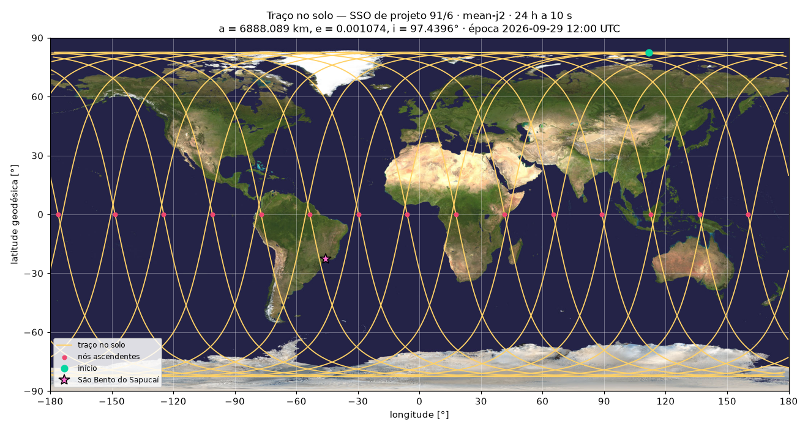
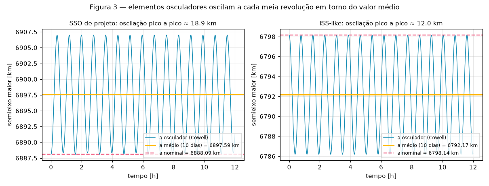
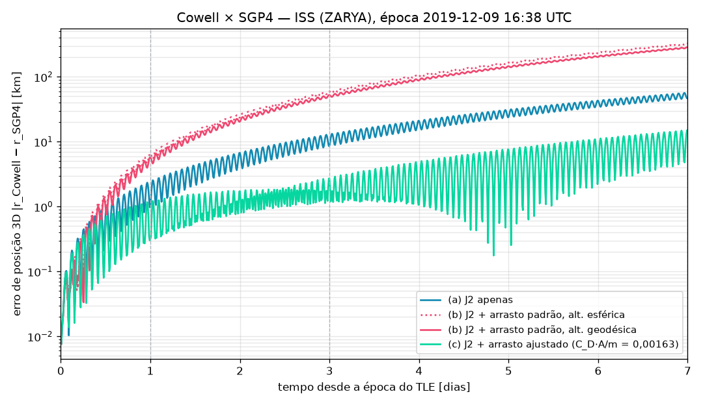
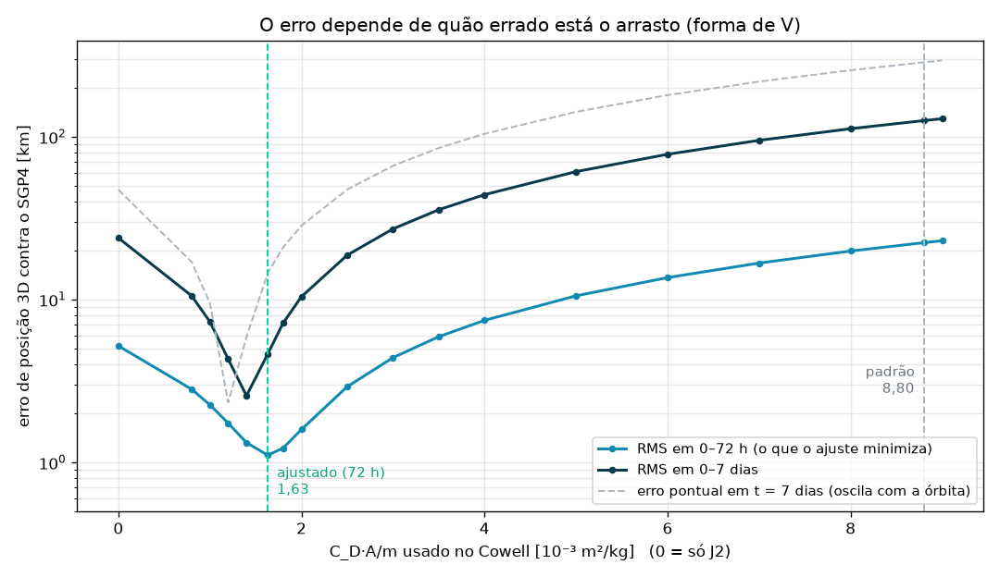

satsim — código explicado
Sobre este documento. Este arquivo contém a explicação detalhada de alguns scripts do projeto satsim. Ele complementa as docstrings e os comentários do código: lá fica o o quê de cada função; aqui fica o porquê das decisões, os conceitos de Python e de mecânica orbital envolvidos e como cada peça se encaixa no restante do simulador. As explicações são acrescentadas à medida que os scripts são revisados, uma seção por script.
Convenções gerais (unidades SI, ângulos em radianos, tempo em UTC, referencial
ECI) estão no ADR docs/adr/0001-arquitetura.md.
1. base.py — a interface dos propagadores
O base.py não calcula nada: ele define o contrato que todo
propagador do projeto precisa cumprir. O conteúdo é curto:
class Propagator(ABC):
"""Propagador de órbita: estado ECI em função do tempo desde a época."""
@property
@abstractmethod
def epoch(self) -> datetime:
"""Época do propagador (UTC, tz-aware): o instante t = 0."""
@abstractmethod
def propagate(self, t: ArrayLike) -> tuple[NDArray[np.float64], NDArray[np.float64]]:
"""t: segundos desde ``epoch``, shape () ou (N,).
Retorna (r, v) em ECI, SI [m, m/s], sempre com shape (N, 3).
"""
def as_time_array(t: ArrayLike) -> NDArray[np.float64]:
arr = np.atleast_1d(np.asarray(t, dtype=float))
if arr.ndim != 1:
raise ValueError(f"t deve ser escalar ou 1D, recebido shape {arr.shape}")
return arrA classe abstrata Propagator(ABC)
ABC (Abstract Base Class, do módulo abc da biblioteca padrão) é
uma classe que não pode ser instanciada diretamente. Ela funciona como um molde:
declara quais métodos as subclasses devem ter, sem dizer como eles funcionam.
No satsim, ela materializa a regra central do ADR: todo propagador implementa
propagate(t) → (r, v). Ao longo do projeto haverá vários propagadores:
| Propagador | Semana | Como calcula |
|---|---|---|
KeplerPropagator | 1 | dois corpos, analítico |
| J2 médio | 2 | elementos com deriva secular |
| Cowell | 3 | integração numérica com J2 e arrasto |
| SGP4 | 3 | a partir de TLE (ISS real) |
O resto do código (conversão ECI → ECEF, visibilidade, constelação, exportação para a GUI)
depende só de Propagator, nunca de um propagador específico. Isso garante duas
coisas:
- Troca sem reescrita:
Satellite(propagator=KeplerPropagator(...))viraSatellite(propagator=CowellPropagator(...))e nada mais muda. - Erro cedo: se alguém criar um propagador e esquecer
propagateouepoch, o Python recusa a criação do objeto, em vez de falhar no meio de uma simulação:
TypeError: Can't instantiate abstract class MeuProp without an implementation
for abstract method 'propagate'Por isso os métodos na ABC só têm docstring, sem implementação: a docstring é a especificação do contrato (unidades, referencial e shapes).
O decorator @abstractmethod
Marca o método como obrigatório. No momento de instanciar, a ABC verifica se a subclasse sobrescreveu todos os métodos marcados. Sem esse decorator, a ABC não impediria nada: uma subclasse incompleta funcionaria até a primeira chamada e só então falharia.
O decorator @property
Transforma um método em um atributo de leitura: escreve-se
prop.epoch, sem parênteses, em vez de prop.epoch(). Ele foi usado porque a
época é um dado do propagador, não uma ação. Além disso, impede a atribuição acidental
(prop.epoch = outra_data gera erro), o que protege a consistência: todos os
t são medidos a partir dessa época, e mudá-la depois invalidaria os resultados.
Os dois decorators juntos em epoch
Significam que toda subclasse é obrigada a fornecer epoch como property de
leitura. A ordem importa: @property por fora (em cima) e @abstractmethod
por dentro. A ordem inversa não funciona corretamente no Python moderno.
propagate, por sua vez, leva só @abstractmethod, porque é uma ação que
recebe o argumento t.
A função as_time_array
Não é decorator nem faz parte da ABC: é um helper que todo propagador chama no início de
propagate. Ele normaliza qualquer entrada de tempo (5.0,
[1, 2], np.array(...)) para um array 1D de floats com shape
(N,), rejeitando entradas com mais de uma dimensão. Assim, cada propagador não precisa
repetir esse tratamento, e o contrato “sempre devolve (N, 3)” fica fácil de cumprir.
2. astrotime.py — tempo astronômico
Dois referenciais: ECI e ECEF
Para entender por que este script existe, é preciso distinguir os dois referenciais cartesianos do projeto. Ambos têm origem no centro da Terra e o eixo z ao longo do eixo de rotação, apontando para o polo norte. A diferença está em para onde aponta o eixo x e se ele gira ou não:
| ECI — Earth-Centered Inertial | ECEF — Earth-Centered, Earth-Fixed | |
|---|---|---|
| Eixo x | aponta para o equinócio vernal, uma direção fixa entre as estrelas | aponta para o meridiano de Greenwich (latitude 0°, longitude 0°) |
| Gira? | não: os eixos ficam parados em relação às estrelas | sim: os eixos giram junto com a Terra, uma volta por dia sideral |
| Órbita kepleriana | elipse fixa no espaço | curva que se desloca para oeste a cada volta (é o traço no solo) |
| Um ponto na superfície | gira uma volta por dia | fica parado: São Bento do Sapucaí tem coordenadas constantes |
| Serve para | a física: a equação de movimento só tem a forma simples r̈ = −µr/r³ num referencial inercial; os propagadores trabalham aqui | a geografia: latitude, longitude, altitude, posição da estação de solo, elevação vista do observador e o mapa 2D da GUI |
A passagem de um para o outro é uma única rotação em torno do eixo z, por um ângulo θG que cresce com o tempo:
r_ECEF = Rz(θG) · r_ECI (ADR 0001, seção Convenções)Por que o astrotime.py é necessário
O ângulo θG é o tempo sideral médio de Greenwich (GMST): quanto a Terra já girou,
medido a partir do equinócio vernal. Ele depende do instante absoluto. Os propagadores, porém,
trabalham com t = segundos desde a época, e o usuário fornece datas no calendário
civil (datetime em UTC). O astrotime.py faz a ponte entre essas três formas de
expressar o tempo:
datetime UTC ──datetime_to_jd──► JD ──gmst──► θG [rad] ──► Rz(θG): ECI → ECEF
◄──jd_to_datetime───
t do propagador ──jd_from_epoch(epoch_jd, t)──► JDSem este módulo não seria possível saber sobre qual ponto da Terra o satélite está: o propagador diz onde o satélite está no espaço (ECI), mas latitude, longitude, o traço no solo do mapa 2D (card S1-08) e a visibilidade sobre São Bento do Sapucaí (semana 4) exigem o ECEF, e o ECEF exige θG no instante certo.
A Data Juliana (JD)
A Data Juliana conta os dias, com fração decimal, desde o meio-dia de 1º de janeiro de 4713 a.C. É a escala de tempo padrão da astronomia porque é um único número contínuo: sem meses de tamanhos diferentes, anos bissextos ou fusos horários, a diferença entre dois instantes é uma simples subtração. Alguns valores de referência usados nos testes:
| Instante (UTC) | JD | Observação |
|---|---|---|
| 1970-01-01 00:00 | 2440587,5 | época do Unix timestamp |
| 2000-01-01 00:00 | 2451544,5 | o dia juliano começa ao meio-dia, daí o “,5” |
| 2000-01-01 12:00 | 2451545,0 | J2000.0, a época de referência da fórmula do GMST |
datetime_to_jd usa a relação exata JD = 2440587,5 + timestamp/86400: o
timestamp() do Python conta segundos desde 1970-01-01 UTC e já desconta o fuso horário,
de modo que 09:00 no horário de Brasília (−03:00) e 12:00 UTC dão o mesmo JD. Um
datetime sem fuso (naive) é rejeitado com ValueError, porque não
dá para saber a qual instante ele se refere. jd_to_datetime faz o caminho inverso,
arredondando a microssegundos; como um float com JD ≈ 2,5 milhões tem resolução de cerca de
40 µs, a ida e volta tem erro de dezenas de microssegundos (o critério do card é < 100 µs).
jd_from_epoch converte o t do propagador em JD: epoch_jd + t/86400,
vetorizado.
O GMST: a fórmula IAU-82
A função gmst implementa a fórmula de Vallado (eq. 3-47), com T em séculos julianos
desde J2000:
T = (JD − 2451545,0) / 36525
θ [s] = 67310,54841 + (876600·3600 + 8640184,812866)·T + 0,093104·T² − 6,2e-6·T³
θG [rad] = (θ mod 86400) · 2π / 86400O resultado intermediário está em segundos de tempo sideral: um dia inteiro (86 400 s) equivale a uma volta (2π). Cada termo tem um papel:
- 67310,54841 s é o GMST em J2000.0, ou seja, 280,46061837° (teste
test_gmst_j2000); - 876600·3600·T são as voltas inteiras: 876 600 h = 36 525 dias × 24 h, isto é, uma volta por dia solar;
- 8640184,812866·T é o adiantamento sideral: a cada dia solar a Terra gira um pouco mais que 360°, porque também avançou na órbita em volta do Sol;
- os termos em T² e T³ são correções lentas (precessão do equinócio), desprezíveis em poucos anos.
Esse “um pouco mais” é a chave do projeto: num dia o GMST avança 360° + 0,9856°
(teste test_gmst_daily_rate). Os 0,9856°/dia são exatamente o movimento aparente do
Sol, o mesmo número que define a órbita heliossíncrona (Sem4 eq. 26): o plano da órbita precisa
girar 0,9856° por dia para acompanhar o Sol.
Validação
- Vallado, Exemplo 3-5 (20/08/1992 12:14 UT1): JD = 2448855,009722 e GMST = 152,5788°, reproduzidos.
- Skyfield, só nos testes: em 200 datas aleatórias entre 1990 e 2040, a diferença máxima foi de 0,006 s de tempo sideral (critério: < 0,1 s). O Skyfield usa uma formulação mais recente (IAU 2000/2006, baseada no ângulo de rotação da Terra); a diferença de milissegundos é a discrepância entre os dois modelos.
Simplificações assumidas
| Simplificação | Por quê | Impacto |
|---|---|---|
| UTC tratado como UT1 | a fórmula pede UT1, o tempo da rotação real da Terra, que exige tabelas publicadas pelo IERS; usamos UTC direto | |UT1 − UTC| < 0,9 s ⇒ até ≈ 0,4 km no equador |
| Segundos intercalares ignorados | datetime do Python não os representa (todo dia tem 86 400 s) |
intervalos que cruzam um segundo intercalar ficam 1 s mais curtos |
Taxa do GMST ≠ OMEGA_EARTH |
a fórmula dá ≈ 7,2921158553e-5 rad/s; os PDFs usam a constante 7,292115e-5 rad/s | ≈ 5 m/dia no equador; por isso ECI → ECEF usa a fórmula completa, nunca
OMEGA_EARTH · t |
Para visibilidade de satélites, em que importam centenas de metros, essas simplificações são aceitáveis. Estão registradas no ADR e na docstring do módulo.
3. secular.py — taxas seculares de J2
O que o script calcula
A Terra não é uma esfera perfeita: ela é achatada nos polos, com um “cinturão” de massa extra no
equador. O coeficiente J2 mede esse achatamento. Na média de muitas voltas, o
efeito de J2 não muda a forma da órbita (o semieixo maior a, a
excentricidade e e a inclinação i médios ficam constantes), mas faz três
ângulos derivarem a uma taxa constante. São essas três taxas, mais o movimento médio kepleriano
n, que o secular.py devolve:
p = a(1 − e²), k = 1,5·J2·(R⊕/p)², n = √(µ/a³)
Ω = −k·n·cos i (Sem4 eq. 23)
ω = ½·k·n·(5cos²i − 1) (Sem4 eq. 24)
ψ = n·[1 + k·√(1 − e²)·(1 − 1,5·sin²i)] (Sem4 eq. 25)| Campo | Símbolo | Significado físico |
|---|---|---|
n | n | movimento médio de dois corpos (sem J2): 2π / período kepleriano |
raan_dot | Ω | regressão do nó: o plano da órbita gira em torno do eixo da Terra. É a taxa que, igualada a 0,9856°/dia, define a órbita heliossíncrona |
argp_dot | ω | rotação da linha dos apsides: o perigeu gira dentro do plano da órbita. Zera na inclinação crítica arccos(1/√5) = 63,43° |
psi_dot | ψ | movimento médio perturbado: a anomalia média avança
um pouco mais devagar (ou mais depressa) do que n por causa de J2 |
As taxas são em rad/s. Um número para ter em mente: na órbita heliossíncrona de projeto, Ω vale ≈ 2·10⁻⁷ rad/s, o que parece desprezível, mas são 0,9856° por dia, ou uma volta completa do plano da órbita por ano.
O decorator @dataclass
Muitas classes só servem para guardar dados, sem lógica. Escrever essas classes à
mão é repetitivo: o __init__ recebe cada campo e o copia para self, o
__repr__ monta um texto legível e o __eq__ compara campo a campo. O
@dataclass (módulo dataclasses da biblioteca padrão) gera esses três métodos
automaticamente a partir das anotações de tipo da classe. O código do script:
@dataclass(frozen=True)
class SecularRates:
n: FloatOrArray
raan_dot: FloatOrArray
argp_dot: FloatOrArray
psi_dot: FloatOrArrayé equivalente a escrever à mão:
class SecularRates:
def __init__(self, n, raan_dot, argp_dot, psi_dot):
self.n = n
self.raan_dot = raan_dot
self.argp_dot = argp_dot
self.psi_dot = psi_dot
def __repr__(self): # usado por print()
return f"SecularRates(n={self.n}, raan_dot={self.raan_dot}, ...)"
def __eq__(self, other): # usado por ==
return (self.n, self.raan_dot, ...) == (other.n, other.raan_dot, ...)O argumento frozen=True torna os objetos imutáveis: depois de criado, nenhum
campo pode ser alterado. É a mesma ideia do @property em epoch (seção 1):
as taxas valem para um (a, e, i) específico, e modificar uma delas isoladamente produziria
um conjunto inconsistente. A tentativa gera erro:
>>> rates.n = 1.0
dataclasses.FrozenInstanceError: cannot assign to field 'n'A classe SecularRates e a função secular_rates
Os nomes são parecidos, mas as duas peças têm papéis diferentes, e secular_rates
não é um método da classe: é uma função comum, definida no nível do módulo (fora da
classe, sem indentação).
SecularRates(com maiúsculas, convenção para classes) é a caixa: quatro compartimentos com nome e nenhum cálculo.secular_rates(a, e, i)(com minúsculas, convenção para funções) faz as contas e, na última linha, coloca os quatro resultados numaSecularRatesnova e a devolve.
Um exemplo mínimo com a mesma estrutura, fora da mecânica orbital:
@dataclass(frozen=True)
class Retangulo: # a caixa
area: float
perimetro: float
def medir(largura, altura): # a função que calcula
area = largura * altura
perimetro = 2 * (largura + altura)
return Retangulo(area, perimetro) # cria a caixa e a devolve
r = medir(3, 4)
print(r) # Retangulo(area=12, perimetro=14)
print(r.area) # 12No secular.py, o return Retangulo(area, perimetro) corresponde a
return SecularRates(n, raan_dot, argp_dot, psi_dot). O uso real, para a órbita
heliossíncrona de projeto:
>>> rates = secular_rates(a=6888.089e3, e=1.074e-3, i=np.radians(97.4396))
>>> rates
SecularRates(n=0.0011043856704022533, raan_dot=1.991076039546266e-07,
argp_dot=-7.044166649355821e-07, psi_dot=0.0011036554735148136)
>>> np.degrees(rates.raan_dot) * 86400 # Ω em °/dia
0.98565... # = taxa do Sol: órbita heliossíncronaPor que não devolver uma tupla? A função poderia terminar em
return n, raan_dot, argp_dot, psi_dot. Mas aí quem chama teria de lembrar a ordem e
escrever rates[2] para obter ω, e trocar a ordem por engano não daria erro, só um
resultado errado. Com a dataclass, o acesso é por nome (rates.argp_dot), o
print mostra o que é cada número e o editor completa os nomes dos campos.
Escalar ou vetor: broadcasting e _as_scalar_if_0d
A função aceita tanto números quanto arrays NumPy, para calcular as taxas de muitas órbitas de uma vez (por exemplo, uma varredura de altitudes para montar a tabela das órbitas heliossíncronas). A primeira linha
a, e, i = np.broadcast_arrays(*(np.asarray(x, dtype=float) for x in (a, e, i)))converte as três entradas em arrays de float e as ajusta a um shape comum (broadcasting):
19 altitudes com uma única e e uma única i viram três arrays de shape
(19,). A partir daí, cada fórmula opera elemento a elemento, sem laço
for.
O efeito colateral é que até uma entrada escalar vira um array de dimensão zero
(np.array(0.0011)), que é incômodo de imprimir e comparar. O helper
_as_scalar_if_0d desfaz isso no final: se o resultado tem ndim == 0, ele vira
um float comum; senão, fica como array. Por isso o tipo dos campos é
FloatOrArray. O _ no início do nome indica que é um detalhe interno do
módulo, não parte da interface pública.
Antes das contas, a função valida as entradas: a ≤ 0 ou e fora de
[0, 1) levantam ValueError, já que as fórmulas só valem para órbitas
elípticas.
O operador * de desempacotamento
A última linha de secular_rates tem um * que não é multiplicação:
return SecularRates(*(_as_scalar_if_0d(x) for x in (n, raan_dot, argp_dot, psi_dot)))Ele é o operador de desempacotamento (unpacking): pega uma sequência de valores e passa cada um como um argumento separado da chamada. A linha se lê em duas partes:
(_as_scalar_if_0d(x) for x in (...))é uma expressão geradora: aplica_as_scalar_if_0da cada uma das quatro taxas e produz quatro valores, em ordem;- o
*na frente “abre” esse gerador e entrega os quatro valores como argumentos posicionais.
O resultado é idêntico a escrever:
return SecularRates(
_as_scalar_if_0d(n),
_as_scalar_if_0d(raan_dot),
_as_scalar_if_0d(argp_dot),
_as_scalar_if_0d(psi_dot),
)O * só evita repetir _as_scalar_if_0d(...) quatro vezes. A ordem importa: os
valores entram nos campos na ordem em que foram declarados na dataclass (n,
raan_dot, argp_dot, psi_dot). Um exemplo mínimo:
def soma3(a, b, c):
return a + b + c
valores = [1, 2, 3]
soma3(valores) # TypeError: a lista inteira vai para a; faltam b e c
soma3(*valores) # 6, equivale a soma3(1, 2, 3)Sem o *, o gerador inteiro entraria como um único argumento em n e o Python
reclamaria da falta de raan_dot, argp_dot e psi_dot. A primeira
linha da função usa o mesmo recurso:
np.broadcast_arrays(*(np.asarray(x, dtype=float) for x in (a, e, i))) equivale a passar
np.asarray(a, ...), np.asarray(e, ...) e np.asarray(i, ...) como três
argumentos separados.
Os demais * da função são multiplicação comum (k * n * cos_i), e
** é potência (a**3). A posição distingue os dois usos: o * de
desempacotamento fica no início de um argumento, dentro dos parênteses de uma chamada; o de
multiplicação fica entre dois valores.
O período nodal: nodal_period
O período nodal é o tempo entre duas passagens consecutivas do satélite pelo nó ascendente, isto é,
cruzando o equador de sul para norte. É ele, e não o período kepleriano, que define quantas voltas por
dia o satélite dá sobre a Terra e, portanto, o padrão de repetição do traço no solo. O argumento de
latitude u = ω + ν avança em média à taxa ψ + ω, então:
Tnod = 2π / (ψ + ω) (Sem4 eq. 34)nodal_period reaproveita secular_rates e usa os campos pelo nome
(rates.psi_dot + rates.argp_dot), um exemplo direto da vantagem da dataclass. Na órbita de
projeto, Tnod = 5696,70 s contra Tkep = 2π/n = 5689,30 s: J2 alonga a volta nodal em
≈ 7,4 s.
Validação
Os testes em tests/test_secular.py comparam as taxas com o Apêndice A.1 do prompt da
Semana 2 e verificam casos com resposta conhecida:
| Caso | O que é verificado |
|---|---|
| ISS, SSO de projeto, polar, Molniya | Ω e ω em °/dia contra a tabela de referência |
| SSO de projeto | Tnod = 5696,70 s, Tkep = 5689,30 s e ψ/n − 1 = −6,6·10⁻⁴ |
| Órbita polar (i = 90°) | Ω = 0, porque cos 90° = 0 |
| Inclinação crítica (63,43°) | ω = 0 para qualquer a e e |
| J2 = 0 | Ω = ω = 0 e ψ = n: volta ao caso kepleriano |
| Entrada vetorial | o resultado com 19 altitudes é idêntico a 19 chamadas escalares |
| Entradas inválidas | ValueError para a ≤ 0 e e ∉ [0, 1) |
Simplificações assumidas
- Só J2, só primeira ordem. J3 e J4 ficam de fora. J3 importa para a órbita congelada, em que ele cancela ω (Semana 5).
- Só elementos médios. As oscilações de curto período dos elementos osculadores,
da ordem de quilômetros em
a, não aparecem: o resultado é a tendência média. - Sem singularidades. Nenhuma fórmula divide por
enem porsin i, então as órbitas circulares e equatoriais funcionam sem tratamento especial.
4. forces/j2.py — a aceleração de J2
Para que serve o script
O secular.py (seção 3) descreve o efeito de J2 na média: três ângulos que
derivam a taxas constantes. O CowellPropagator faz o caminho oposto: em vez de usar o
resultado médio, ele integra numericamente a equação de movimento, passo a passo, e para isso precisa
saber a força (por unidade de massa, ou seja, a aceleração) que atua no satélite em
cada ponto do espaço. O j2.py fornece essa peça: dada a posição r do
satélite em ECI, ele devolve a aceleração extra causada pelo achatamento da Terra.
A equação que o Cowell integra é
r̈ = −µ·r/r³ + a_J2(r)
└ Terra esférica ┘ └ correção do achatamento (este script) ┘O primeiro termo é a gravidade de uma Terra esférica; fica no próprio propagador. O segundo é o
que este script calcula. Separar os dois permite ligar e desligar a perturbação
(models=() volta ao problema de dois corpos) e, na Semana 3, somar o arrasto atmosférico
sem mexer no propagador.
A física: um potencial e o seu gradiente
A gravidade de uma Terra achatada é a da esfera mais uma pequena correção, descrita por uma
função perturbadora R (Sem4 §2.2), que depende da distância r e da
latitude geocêntrica φ (sin φ = z/r):
R(r) = −µ·J2·R⊕²·(3 sin²φ − 1) / (2 r³)A aceleração é o gradiente de R, isto é, a direção em que R cresce mais depressa, com intensidade igual à taxa desse crescimento. Fazendo as derivadas em x, y e z chega-se à forma cartesiana usada no código (Sem4 §9.3):
c = 1,5·J2·µ·R⊕² / r⁵
a = c·[ x·(5z²/r² − 1), y·(5z²/r² − 1), z·(5z²/r² − 3) ]Para ter noção da escala, a 500 km de altitude a gravidade central vale 8,43 m/s² e a correção de J2 fica entre 0,012 e 0,024 m/s²: cerca de 0,14%. A gravidade total continua apontando para dentro, sempre. O que J2 faz é deformá-la ligeiramente, de três jeitos:
| Onde | Correção de J2 (500 km) | Efeito |
|---|---|---|
| Sobre o equador | radial, para dentro: 0,0118 m/s² | a gravidade fica um pouco mais forte (o bojo equatorial está logo abaixo) |
| Sobre os polos | radial, para fora: 0,0235 m/s² | a gravidade fica um pouco mais fraca (a Terra é “mais baixa” ali) |
| Latitudes intermediárias | tem uma componente lateral, rumo ao plano do equador: até 0,0118 m/s², máxima em φ = 45° | a força deixa de ser central: é isso que faz a órbita precessar |
Por que só a componente lateral causa precessão. Uma força radial (apontando para o
centro da Terra ou para longe dele) não exerce torque, porque r × a = 0 quando
a é paralela a r. Sem torque, o momento angular ℓ = r × v não muda de
direção, e portanto o plano da órbita não gira. Nas latitudes intermediárias, porém, a aceleração de
J2 tem uma componente perpendicular a r, de módulo
3·J2·µ·R⊕²·sin φ·cos φ / r⁴, que puxa o satélite em direção ao plano do equador. Essa
componente exerce torque. Como a Terra é simétrica em torno do eixo z, o torque é sempre horizontal
(componente z nula): ele não altera ℓz, só faz o vetor ℓ girar em torno do eixo z, como um pião
inclinado. O nó ascendente acompanha esse giro: é a regressão do nó, Ω (Sem4 eq. 23).
Uma consequência útil para testar o código: como a força vem de um potencial e não depende do tempo, a energia se conserva, e como o torque não tem componente z, ℓz também se conserva. A energia conservada é
ε = v²/2 − µ/r − R(r)com sinal menos antes de R, porque R é definido de modo que a aceleração é
+∇R (a energia potencial é −R).
A interface: AccelerationModel e o Protocol
class AccelerationModel(Protocol):
def __call__(self, t: float, r: NDArray, v: NDArray) -> NDArray: ...O AccelerationModel descreve o que o Cowell espera de qualquer perturbação: algo que
possa ser chamado com o tempo t, a posição r e a velocidade
v (cada uma com shape (3,)) e devolva uma aceleração (3,). J2
usa só r; o arrasto da Semana 3 vai usar também v (e talvez t),
por isso a assinatura já recebe os três.
A diferença para a Propagator(ABC) da seção 1 está em como cada classe declara que
cumpre o contrato:
- com uma ABC, a classe precisa herdar explicitamente
(
class KeplerPropagator(Propagator)); o Python verifica na hora de criar o objeto se os métodos abstratos foram implementados; - com um Protocol, não há herança: qualquer objeto que tenha um
__call__com essa assinatura serve. É a ideia de duck typing (“se anda como pato e grasna como pato, é pato”), mas escrita de forma que o editor e os verificadores de tipo consigam conferir.
Os ... no corpo do método são literalmente o objeto Ellipsis do Python,
usado aqui como “corpo vazio”: o Protocol só descreve a assinatura, não implementa nada.
A função j2_acceleration, linha a linha
def j2_acceleration(r, mu=MU, j2=J2, re=R_EARTH):
r = np.asarray(r, dtype=float)
x, y, z = r[..., 0], r[..., 1], r[..., 2]
r2 = x * x + y * y + z * z
c = 1.5 * j2 * mu * re**2 / (r2 * r2 * np.sqrt(r2))
s = 5.0 * z * z / r2
return np.stack([c * x * (s - 1.0), c * y * (s - 1.0), c * z * (s - 3.0)], axis=-1)np.asarray(r, dtype=float)aceita lista, tupla ou array e devolve um array de float, sem copiar se já for um.r[..., 0]: os três pontos (de novo oEllipsis) significam “todos os eixos anteriores, quantos forem”, e o0escolhe a primeira coordenada do último eixo. Pararde shape(3,),xé um número; para(N, 3),xé a coluna inteira, com shape(N,). A mesma linha serve aos dois casos.r2é r² (quadrado da distância). O código evita calcularre depois elevá-lo:r⁵é escrito comor2 · r2 · √r2, que é uma única raiz quadrada.cessão os fatores comuns da fórmula:c = 1,5·J2·µ·R⊕²/r⁵es = 5z²/r². Calculá-los uma vez evita repetir a mesma conta nas três componentes.- A última linha monta o vetor aceleração com
np.stack, explicado a seguir.
O que o np.stack faz
np.stack junta vários arrays de mesmo shape num array novo, criando um
eixo novo. O parâmetro axis diz onde esse eixo novo entra:
x = np.array([1, 2, 3])
y = np.array([4, 5, 6])
np.stack([x, y], axis=0) # eixo novo na frente → shape (2, 3)
# [[1, 2, 3],
# [4, 5, 6]]
np.stack([x, y], axis=-1) # eixo novo no fim → shape (3, 2)
# [[1, 4],
# [2, 5],
# [3, 6]]Em j2_acceleration, as três componentes (aₓ, a_y, a_z) são calculadas
separadamente, e cada uma tem o shape de x:
- para
rcom shape (N, 3) (N instantes), cada componente tem shape(N,); ostack(..., axis=-1)as coloca lado a lado, como colunas, e o resultado é (N, 3): uma linha por instante, com colunas aₓ, a_y, a_z; - para
rcom shape (3,) (um único ponto), cada componente é um número e o resultado é um vetor (3,).
O axis=-1 (o último eixo) é o que permite que a mesma linha sirva para um ponto e
para N pontos, sem nenhum if: a saída sempre tem o shape da entrada.
Diferença para np.concatenate. concatenate emenda arrays
ao longo de um eixo que já existe, sem criar eixo novo. O CowellPropagator usa
np.concatenate([r0, v0]) para formar o estado do integrador: dois vetores
(3,) viram um único vetor (6,), e não uma matriz (2, 3), que
seria o resultado de np.stack.
np.concatenate([x, y]) # [1, 2, 3, 4, 5, 6] → shape (6,)
np.stack([x, y]) # [[1, 2, 3], [4, 5, 6]] → shape (2, 3)A função j2_potential
Calcula a própria função perturbadora R. O propagador não precisa dela (só a aceleração entra na
equação de movimento), mas ela serve para conferir o código: nos testes, o gradiente
numérico de R tem de bater com j2_acceleration, e a energia
v²/2 − µ/r − R tem de ficar constante ao longo da integração. Aqui a soma dos quadrados
usa np.sum(r * r, axis=-1), que soma ao longo do último eixo: (N, 3) vira
(N,), e (3,) vira um número.
A classe J2Acceleration e o método __call__
class J2Acceleration:
def __init__(self, mu=MU, j2=J2, re=R_EARTH):
self.mu = mu
self.j2 = j2
self.re = re
def __call__(self, t, r, v):
return j2_acceleration(r, mu=self.mu, j2=self.j2, re=self.re)Se a função j2_acceleration já faz a conta, para que uma classe? Por dois motivos:
- Adaptar a assinatura. O Cowell chama toda perturbação como
modelo(t, r, v); a função recebe sór. A classe faz a ponte, ignorandotev. - Guardar parâmetros.
J2Acceleration(j2=0.0)cria um modelo com outro valor de J2 (útil em testes) sem que o Cowell precise saber disso: ele só chama o objeto.
O método especial __call__ é o que torna um objeto “chamável” como se
fosse uma função. Com ele, as duas formas abaixo são equivalentes:
modelo = J2Acceleration()
modelo(0.0, r, v) # o Python traduz para...
modelo.__call__(0.0, r, v) # ...esta chamadaÉ assim que o Cowell usa a perturbação, dentro da função que calcula a derivada do estado:
acc = -self._mu / r_norm**3 * r # gravidade central
for model in self._models: # (J2Acceleration(),) por padrão
acc = acc + model(t, r, v) # soma cada perturbaçãoO método potential(r) da classe chama j2_potential com os mesmos parâmetros
do modelo, para que energia e aceleração sejam sempre calculadas com o mesmo J2.
Validação
Os testes em tests/test_j2_force.py verificam a aceleração isoladamente, e os de
tests/test_cowell.py verificam o seu efeito numa órbita integrada:
| Teste | O que é verificado |
|---|---|
| Gradiente numérico | em 20 pontos aleatórios entre 400 e 2000 km, a aceleração bate com as diferenças centrais de R (passo de 1 m) a 10⁻⁶ relativo |
| Equador e polo | −1,5·J2·µ·R⊕²/r⁴ ao longo de r̂ e +3·J2·µ·R⊕²/r⁴ ao longo de +z, a 10⁻¹² relativo |
| Vetorização | (N, 3) dá o mesmo resultado que N chamadas com
(3,) |
| Energia e ℓz (Cowell, 10 dias) | constantes a 10⁻⁹ relativo |
| Regressão do nó (Cowell, 10 dias) | Ω medido concorda com a teoria do
secular.py em menos de 0,5% |
Simplificações assumidas
- Só J2. J3, J4 e os harmônicos tesserais (que dependem da longitude) ficam de fora. J2 é cerca de 400 vezes maior que J3 e responde pela quase totalidade do efeito em LEO.
- Terra sem rotação no modelo de força. Como J2 é simétrico em torno do eixo z, girar a Terra não muda a aceleração; por isso a conta pode ser feita direto em ECI, sem passar por ECEF.
- ECI simplificado. O eixo z é o polo da data, sem precessão nem nutação (ADR 0001).
5. frames.py e geodesy.py — onde o satélite está sobre a Terra
Para que servem (e para que não servem)
Estes dois módulos não mexem nos propagadores. Kepler, MeanJ2 e Cowell continuam calculando a órbita em ECI exatamente como antes. O que os módulos resolvem é outra pergunta: sobre que ponto da Terra o satélite está. É disso que precisam o mapa 2D, o traço no solo e, na Semana 4, a visibilidade do satélite a partir de São Bento do Sapucaí.
O caminho de um ponto da órbita até o mapa tem duas etapas independentes:
Propagador ──(r em ECI)──► frames.py ──(r em ECEF)──► geodesy.py ──► lat, lon, alt
(órbita no espaço) gira pela rotação converte x, y, z em (mapa, GUI,
da Terra (GMST) coordenadas de mapa estação)Etapa 1 — frames.py: a Terra gira (ECI → ECEF)
O propagador dá a posição num referencial que não gira com a Terra (ECI, seção 2).
Para saber sobre qual longitude o satélite está, é preciso descontar a rotação da Terra, girando o
vetor em torno do eixo z pelo ângulo θ = GMST (o tempo sideral de Greenwich, calculado pelo
astrotime.py):
r_ecef = Rz(θ)·r_eci, Rz(θ) = [[ cos θ, sin θ, 0],
[−sin θ, cos θ, 0],
[ 0, 0, 1]]Essa etapa não tem nada a ver com a forma da Terra: valeria até para uma Terra
perfeitamente esférica. Ela já existia na Semana 1, escondida dentro do scene_export.py;
agora vira uma função da biblioteca, reutilizável e testada. Dois detalhes:
- Sinal da rotação. Rz(θ) é uma rotação passiva: são os eixos que giram,
não o ponto. Se a Terra girou 90° para leste, um ponto fixo no espaço sobre o equinócio vernal,
r_eci = (1, 0, 0), aparece em r_ecef = (0, −1, 0), isto é, na longitude −90° (a oeste). O teste
test_rotation_signverifica exatamente esse caso. - Velocidades. Além de girar o vetor, é preciso descontar o “arrasto” da rotação:
v_ecef = Rz(θ)·(v_eci − ω⊕ × r_eci). Um ponto parado no solo tem velocidade ECI = ω⊕ × r (cerca de 430 m/s no Brasil) e velocidade ECEF zero.
O helper gmst_at(epoch, t) devolve θ nos instantes t (segundos desde a época do
propagador), para que quem chama não precise lidar com Datas Julianas.
ECI e ECEF lado a lado
| ECI (Earth-Centered Inertial) | ECEF (Earth-Centered, Earth-Fixed) | |
|---|---|---|
| Origem | centro da Terra | centro da Terra |
| Eixo z | polo norte | polo norte (o mesmo) |
| Eixo x | equinócio vernal, uma direção fixa entre as estrelas | meridiano de Greenwich (lat 0°, lon 0°) |
| Gira? | não | sim, uma volta por dia sideral (23 h 56 min) |
| O que fica parado nele | a órbita kepleriana (uma elipse fixa) | São Bento do Sapucaí, os continentes, o mapa |
O ECI não gira, mas não é parado no espaço: a origem acompanha a Terra na volta ao redor do Sol. Por isso o nome técnico é “inercial” (rigorosamente, quase-inercial): os eixos mantêm a direção em relação às estrelas, e a aceleração da Terra em torno do Sol é desprezível para uma órbita em LEO. O ECI é usado para propagar, porque nele não aparecem forças fictícias (centrífuga, Coriolis); o ECEF, para tudo o que se refere ao chão. Uma órbita fixa no ECI descreve no ECEF o traço no solo, que se desloca para oeste a cada volta porque a Terra gira por baixo da órbita.
Velocidades entre um referencial fixo e um que gira
Com v=, as funções convertem também a velocidade. v_eci não
é a velocidade relativa entre os dois referenciais: é a velocidade do mesmo objeto (satélite
ou estação) medida por um observador no ECI, enquanto v_ecef é a velocidade desse objeto
medida por quem gira junto com a Terra. A conversão tem duas parcelas:
v_eci = _rotate(v_ecef, -theta) + _omega_cross(r_eci)
# └──── parcela 1 ────┘ └──── parcela 2 ────┘| Parcela | O que representa | É movimento? |
|---|---|---|
v_ecef (a entrada) | o movimento do objeto em relação ao chão | sim |
_rotate(…, −θ) | só reescreve esse vetor nos eixos do ECI, usando a orientação dos eixos naquele instante (θ = GMST, o ângulo que a Terra girou) | não: é uma troca de eixos; o vetor continua o mesmo |
+ ω⊕ × r_eci | o movimento do próprio referencial ECEF naquele ponto, por estar girando | sim |
Ou seja: velocidade vista de fora = movimento do objeto em relação ao chão + movimento do próprio
chão naquele ponto. O _rotate apenas garante que as duas parcelas estejam escritas nos
mesmos eixos antes da soma, como alinhar duas bússolas antes de somar velocidades medidas com
elas. A parcela 2 é uma velocidade linear (m/s), não a taxa de rotação ω⊕ (rad/s): depende da posição,
vale ≈ 465 m/s sobre o equador, ≈ 430 m/s em São Bento e zero sobre o eixo z.
Um exemplo em 2D. Sejam os eixos A fixos (o ECI) e os eixos B girando em relação a A com velocidade angular ω, de modo que o ângulo entre eles é θ(t) = ω·t (o ECEF).
- Ângulo fixo (B rotacionado de θ, sem girar): só o
_rotateé necessário, porque ele troca a representação do vetor de B para A. Um objeto parado em B também está parado em A. - B girando, objeto parado em B em (r, 0): quem gira com B vê o objeto parado,
v_B = 0; visto de A, ele descreve um círculo a ω·r. Só a parcela 2 contribui:v_A = ω × r_A = ω·(−y_A, x_A). É o caso da estação de solo. - B girando, objeto se movendo em B: somam-se as duas coisas,
v_A = R(−θ)·v_B + ω × r_A. É o caso geral, o de um satélite.
Em 2D, o produto vetorial com ω = (0, 0, ω) se reduz a girar o vetor posição 90° e multiplicá-lo por
ω: ω × (x, y) = ω·(−y, x). É exatamente o que _omega_cross calcula,
(−ω·y, ω·x, 0). O caso inverso também vale: um objeto parado em A aparece em B girando no
sentido contrário. Por isso eci_to_ecef subtrai o termo antes de girar,
v_ecef = Rz(θ)·(v_eci − ω⊕ × r_eci); é o que faz uma estrela, parada no ECI, parecer
cruzar o céu para quem está no chão.
De onde sai a fórmula. A posição converte como r_eci = Rz(θ)ᵀ·r_ecef,
com θ = θ0 + ω⊕·t variando no tempo. Derivando o produto:
v_eci = Rz(θ)ᵀ·v_ecef + (d Rz(θ)ᵀ/dt)·r_ecef
= Rz(θ)ᵀ·v_ecef + ω⊕ × r_eciO primeiro termo vem de r_ecef variar no tempo; o segundo, de a matriz variar
no tempo (a Terra girando). A derivada de uma rotação em torno de z se reduz ao produto vetorial com
ω⊕. Na física, esse resultado é o teorema do transporte.
A equação vale para qualquer órbita. A parcela 1 é a velocidade do satélite em relação ao ECEF, e em LEO ela é a maior parte da velocidade. Números reais da órbita de projeto (a = 6888 km), com o satélite sobre o equador:
| Órbita | |v_eci| | |v_ecef| (relativa ao chão) | |ω⊕ × r| |
|---|---|---|---|
| SSO, i = 97,44° | 7607 m/s | 7688 m/s | 502 m/s |
| prograda equatorial, i = 0° | 7607 m/s | 7105 m/s | 502 m/s |
- A velocidade relativa ao chão, de 7,1 a 7,7 km/s, é a que faz o subponto correr pelo mapa (uma volta em ~95 min).
- Na prograda equatorial o satélite voa para leste, no sentido da rotação: o chão “foge” dele, e as duas velocidades, paralelas, simplesmente se subtraem (7607 − 502 ≈ 7105 m/s).
- Na SSO (retrógrada, quase polar) o satélite cruza a rotação quase de lado e ligeiramente contra ela: a velocidade relativa fica um pouco maior, e a soma é vetorial.
- Só num satélite geoestacionário
v_ecef = 0: a velocidade orbital (≈ 3,07 km/s) é exatamente ω⊕ × r, e a equação se reduz av_eci = ω⊕ × r.
Para que serve retornar a velocidade: na Semana 4, a taxa de aproximação do satélite à estação
(efeito Doppler) exige as duas velocidades no mesmo referencial; e estados vindos de GPS ou de
catálogos em ECEF precisam ser convertidos para ECI para iniciar o Cowell. Os testes verificam o ponto
fixo no solo (v_eci = ω⊕ × r e, de volta, v_ecef = 0) e a ida e volta de
10 000 estados.
Recursos de NumPy usados em frames.py
np.zeros_like(x) e np.ones_like(x) criam um array novo, com
o mesmo shape e dtype de x, preenchido com 0 ou com 1 (o conteúdo de x é
ignorado). Equivalem a np.zeros(x.shape, dtype=x.dtype):
theta = np.array([0.1, 0.2, 0.3])
np.zeros_like(theta) # array([0., 0., 0.]) shape (3,)
np.ones_like(theta) # array([1., 1., 1.])
np.zeros_like(np.array(0.5)) # array(0.) → 0-D, como a entrada escalarEm rot_z, a matriz Rz(θ) tem entradas que variam com θ (cos θ, sin θ) e entradas
constantes (0 e 1). Como o np.stack exige entradas de shapes iguais, os 0 e 1 precisam ter
o shape de cos θ: com θ (N,), um 0 literal faria o stack falhar. Com os
_like, a mesma linha gera (3, 3) para θ escalar e (N, 3, 3) para θ (N,).
_omega_cross usa np.zeros_like(r[..., 2]) para a componente z nula de
ω⊕ × r, pelo mesmo motivo. (Parente: np.full_like(t, valor), usado em
mean_j2.py, preenche com um valor qualquer.)
r[..., k]: os ... (Ellipsis) valem “todos os eixos anteriores,
quantos forem”, e k indexa o último eixo, que no projeto é sempre o das
coordenadas x, y, z.
Shape de r | r[..., 1] equivale a | Resultado |
|---|---|---|
| (3,): uma posição | r[1] | um número (o y) |
| (N, 3): N instantes | r[:, 1] | (N,): o y de cada linha |
| (P, N, 3): P satélites | r[:, :, 1] | (P, N) |
Escrever r[:, 1] só funcionaria para (N, 3) e daria IndexError com (3,).
Com [..., k] as funções aceitam qualquer quantidade de posições. O axis=-1 do
np.stack é a operação inversa: tira as coordenadas do último eixo com [..., k]
e as recoloca no último eixo, de modo que a saída tem sempre o shape da entrada, sem nenhum
if.
Etapa 2 — geodesy.py: a Terra é achatada (ECEF → lat, lon, alt)
Aqui entra o WGS84. Na Semana 1, o subponto usava uma Terra esférica:
lat = arcsin(z/r) e alt = r − 6378 km. Como a Terra é achatada, essa
aproximação erra, e não pouco:
| Satélite a 500 km de altitude real | Esfera (Semana 1) | WGS84 (agora) |
|---|---|---|
| sobre o equador | 500,0 km | 500 km |
| a 45° de latitude | 489,3 km | 500 km |
| sobre o polo | 478,6 km | 500 km |
A latitude também muda. A esfera mede a latitude geocêntrica, o ângulo da reta que liga o ponto ao centro da Terra. Mapas e GPS usam a latitude geodésica, o ângulo da normal à superfície (a vertical local, a direção de um fio de prumo). As duas coincidem no equador e nos polos e diferem até 0,19° a 45°, o que dá cerca de 21 km no chão.
O que são as constantes WGS84
WGS84 (World Geodetic System 1984) é o elipsoide padrão que aproxima a forma da Terra. É o sistema do GPS e dos mapas: quando se diz que São Bento do Sapucaí fica em −22,69°, −45,73°, 900 m, esses números são coordenadas WGS84. O elipsoide é definido por dois números, e os outros dois derivam deles:
| Constante | Valor | Significado |
|---|---|---|
WGS84_A | 6 378 137 m | raio equatorial (igual ao R_EARTH
que já usávamos) |
WGS84_F | 1/298,257223563 | achatamento: quanto o polo é “amassado” em relação ao equador |
WGS84_B | 6 356 752 m | raio polar, b = a(1 − f): 21,4 km menor que o equatorial |
WGS84_E2 | 0,00669 | excentricidade² do elipsoide, e² = f(2 − f): a forma em que o achatamento entra nas fórmulas de conversão |
Elas são necessárias porque, sem a forma da Terra, não dá para converter x, y, z em latitude e altitude corretas, nem fazer o caminho inverso: colocar a estação de São Bento do Sapucaí, dada em lat/lon/alt, no mesmo referencial do satélite.
As conversões
Geodésico → ECEF (geodetic_to_ecef) tem fórmula fechada. N é o raio de
curvatura do elipsoide na latitude φ (a distância do ponto da superfície até o eixo z, medida ao longo
da normal):
N = a / √(1 − e²·sin²φ)
x = (N + h)·cos φ·cos λ
y = (N + h)·cos φ·sin λ
z = (N·(1 − e²) + h)·sin φECEF → geodésico (ecef_to_geodetic) não tem fórmula fechada simples,
porque φ aparece dentro de N. O código usa o método de Bowring: parte de um chute
(a latitude de um ponto na superfície) e refina φ até a mudança entre iterações ficar abaixo de
10⁻¹² rad, o que leva 2 ou 3 iterações. A longitude é direta, λ = atan2(y, x). A altitude é calculada
por
h = p·cos φ + z·sin φ − a·√(1 − e²·sin²φ), p = √(x² + y²)e não pela forma mais comum h = p/cos φ − N, que divide por cos φ e explode nos polos.
A forma usada não divide por nada que possa zerar, então funciona nos polos, no equador e também
para h negativo (pontos abaixo do elipsoide).
ecef_to_spherical mantém a aproximação esférica da Semana 1 (latitude
geocêntrica e r − R⊕), apenas para comparação: o S2-07 vai usá-la para medir quanto a GUI muda ao
trocar a esfera pelo elipsoide.
As funções seguem a convenção de shapes do projeto: uma posição (3,) gera três
números, e (N, 3) gera três arrays (N,).
A ligação com J2
O fato físico é o mesmo (a Terra é achatada), mas ele aparece em dois papéis diferentes:
- J2 (seções 3 e 4): dinâmica. O bojo equatorial altera a gravidade e, com isso, a órbita (precessão do nó). Fica dentro dos propagadores.
- WGS84 (esta seção): geometria. A forma da superfície muda como descrevemos a posição em coordenadas de mapa. Fica depois dos propagadores e não altera a órbita.
Os dois números estão relacionados (um planeta em rotação, em equilíbrio, fica achatado e por isso tem J2 ≠ 0), mas o código os usa de forma independente.
Onde isso será usado
- S2-04: o subponto e o traço no solo, para qualquer propagador.
- S2-07: o
scene_exporttroca a aproximação esférica pelo geodésico. A GUI passa a mostrar a latitude e a altitude corretas; a latitude máxima da SSO aparece como 82,6° (geodésica) em vez de 82,56° (geocêntrica). - Semana 4: a visibilidade. A elevação do satélite vista de São Bento depende de onde a estação realmente está, o que exige converter a posição WGS84 da estação para ECEF.
Validação
| Teste | O que é verificado |
|---|---|
| Sinal da rotação | (1, 0, 0) com θ = 90° → longitude −90° |
| ECI ↔ ECEF, ida e volta | 10 000 pontos de LEO a GEO; erro no limite da precisão de máquina: < 10⁻¹⁵ relativo (medido: ≈ 2 nm em LEO) |
| Ponto fixo no solo | velocidade ECI = ω⊕ × r, e de volta v_ecef = 0 |
| Valores conhecidos | (a, 0, 0) → (0°, 0°, 0 m); (0, 0, b) → (90°, h = 0); a − b = 21,385 km; geocêntrica − geodésica a 45° = −0,1924° |
| Geodésico, ida e volta | 10 000 pontos com h de −10 km a 40 000 km, mais polos e equador: erro < 1 mm (medido: ≈ 2·10⁻⁸ m) |
| Skyfield (oráculo) | 20 pontos, incluindo São Bento do Sapucaí: diferença < 10 m (medida: ≈ 3·10⁻⁹ m na ida e 5·10⁻⁸ m na volta) |
Simplificações assumidas
- ECI do equinócio da data, sem precessão nem nutação. Por isso o ECI do satsim não é comparável ao GCRS do Skyfield (diferem em ≈ 0,37° em 2026), e o Skyfield valida só a parte ECEF ↔ geodésico.
- UT1 ≈ UTC no GMST: até 0,9 s, ≈ 0,4 km no equador.
- Sem movimento polar: ECI e ECEF compartilham o eixo z (erro de ~10 m).
6. groundtrack.py — o traço no solo
Para que serve
O traço no solo (ground track) é a linha que o subponto do satélite, o ponto
da superfície logo abaixo dele, desenha no mapa ao longo do tempo. O groundtrack.py tem três
funções:
subpoint(propagator, t)responde “onde o satélite está sobre a Terra”, para qualquer propagador: posição ECI → rotação pelo GMST → ECEF → latitude, longitude e altitude WGS84 (seção 5);split_at_antimeridian(lon, lat)prepara o traço para ser desenhado num mapa 2D sem riscos atravessando a figura;ascending_node_crossings(t, lat, lon)encontra quando e onde o satélite cruza o equador subindo.
O card tem dois lados. O groundtrack.py é código de produção: o S2-07
usa a mesma conta do subponto para alimentar a GUI, a Semana 4 parte dela para a visibilidade sobre
São Bento, e a Semana 5 usa os nós ascendentes para a grade e o faseamento da constelação 91/6. Já o
script scripts/plot_ground_track.py e as imagens em reports/s2_comparacao/
são verificação: um gráfico estático (matplotlib), reprodutível e versionado, que
mostra num comando só que toda a cadeia da semana funciona junta. A GUI interativa (o viewer) não muda
neste card; ela é atualizada no S2-07.

python scripts/plot_ground_track.py --preset sso. Os pontos vermelhos são os nós
ascendentes; cada um fica 23,7° a oeste do anterior.split_at_antimeridian: evitar o risco que atravessa o mapa
O problema. No mapa 2D a longitude vai de −180° (borda esquerda) a +180° (borda direita), mas na Terra as duas bordas são a mesma linha: o antimeridiano, no meio do Pacífico. Quando o satélite passa por ela, a longitude salta de, por exemplo, +179° para −179°. Na Terra ele andou só 2°; no mapa, os dois pontos estão em lados opostos. Se o gráfico ligar os pontos em ordem, desenha uma linha horizontal atravessando o mapa inteiro:
lon [°]: 170 175 179 -179 -175 -170
↑
salto de 358°: o satélite saiu pela borda direita
e entrou pela esquerdaO que a função faz. Percorre as longitudes em ordem e, onde a diferença entre duas amostras seguidas passa de 180°, corta o traço em dois pedaços:
segmento 1: lon 170, 175, 179 → termina na borda direita
segmento 2: lon -179, -175, -170 → começa na borda esquerdaCada pedaço é desenhado separadamente, sem linha atravessando o mapa. Nenhum ponto é criado nem
descartado: o traço só é dividido. O critério “> 180°” funciona porque, entre duas amostras próximas
(10 s), o satélite anda bem menos que 180° em longitude; um salto aparente maior só pode significar que
ele deu a volta pela borda. No código, os pontos de corte saem de
np.flatnonzero(np.abs(np.diff(lon)) > π) + 1 e o traço é dividido com
np.split.
Quantas vezes o traço cruza o antimeridiano. A SSO de projeto é retrógrada (i > 90°): a cada revolução nodal a longitude do subponto recua uma volta inteira mais os 23,736° do deslocamento do nó. São (360 + 23,736)/360 × 86400/5696,70 ≈ 16,17 cruzamentos por dia, ou seja, 16 ou 17 em 24 h conforme a posição inicial, e exatamente 97 no ciclo de 6 dias ((360 + 23,736)/360 × 91 = 97,0). A imagem acima tem 17 pedaços: 16 cruzamentos. O card S2-04 previa 15 ou 16, com base nas 15,17 revoluções por dia; a correção foi registrada no golden file na revisão do card.
ascending_node_crossings: quando e onde o satélite cruza o equador subindo
O que é o nó ascendente. É o ponto onde o satélite cruza o equador indo do hemisfério sul para o norte, com a latitude passando de negativa para positiva. Acontece uma vez por volta, e a sequência desses pontos mostra como o traço se desloca dia a dia.
O problema. O satélite só é amostrado a cada 10 s, então quase nunca há uma amostra com latitude exatamente 0. O cruzamento acontece entre duas amostras:
t [s]: 1000 1010
lat [°]: -0,30 +0,34 ← o sinal trocou: cruzou o equador aqui
lon [°]: -45,10 -45,05O que a função faz, em três passos:
- Acha os pares de amostras em que a latitude passa de negativa para não negativa (sul → norte). Os pares em que ela desce (norte → sul) são nós descendentes e ficam de fora.
- Interpola linearmente o instante em que a latitude vale 0. No exemplo, a latitude percorre 0,64° em 10 s e precisa subir 0,30° para chegar a zero: 0,30/0,64 = 47% do intervalo, logo t ≈ 1004,7 s.
- Interpola a longitude na mesma fração: −45,10 + 0,47 × 0,05 ≈ −45,08°. Se o par estiver dos dois lados do antimeridiano, a diferença de longitude é reduzida a [−180°, 180°) antes da interpolação (2°, e não 358°), pelo mesmo motivo da função anterior.
O resultado são duas listas: os instantes e as longitudes de cada nó ascendente. Com elas os testes verificam a física da semana:
| Grandeza | Valor medido | O que confirma |
|---|---|---|
| Intervalo entre nós consecutivos | 5696,70 s | o período nodal das taxas seculares de J2 (seção 3) |
| Deslocamento entre nós consecutivos | −23,736° | a cada volta o traço anda 23,7° para oeste, porque a Terra girou por baixo da órbita: −(ω⊕ − Ω)·Tnod |
| Nó da volta 91 contra o da volta 0, após 6 dias | 4,5·10⁻⁴° | o fechamento do ciclo de repetição 91/6, que a constelação da Semana 5 explora |
Por que estes testes verificam toda a semana
Os números acima vêm da Sem4 e são independentes do código. Para eles baterem, todos os elos precisam estar certos ao mesmo tempo: as taxas de J2 (S2-01), o sinal da rotação ECI → ECEF e o GMST (S2-03), a conversão geodésica (S2-03) e a interpolação dos nós. Um erro em qualquer elo apareceria como um Δλ ou um Tnod errado, ou como um ciclo que não fecha. Na prática, o S2-04 é um teste de integração da semana. A latitude máxima completa o quadro: 82,56° geocêntrica (= 180° − i) e 82,61° geodésica, a diferença que o WGS84 introduz.
Simplificações assumidas
- Interpolação linear dos nós: perto do equador a latitude varia quase linearmente com o tempo, e o erro com passo de 10 s é muito menor que as tolerâncias.
- Sem pontos nas bordas:
split_at_antimeridiannão insere pontos em ±180°, então cada pedaço termina a até um passo (10 s) da borda do mapa. Na escala do mapa isso não é visível. - O viewer JS faz a sua própria quebra no antimeridiano desde a Semana 1; esta função serve aos gráficos em Python.
7. compare_propagators.py — médio × osculador na prática
O que o script faz
Num único comando (python scripts/compare_propagators.py, ≈ 5 s), o script propaga
três órbitas por 10 dias com os três propagadores e gera cinco figuras e um relatório com a tabela de
números e um parágrafo de conclusões. Ele não acrescenta nada à biblioteca: valida e documenta o que
os cards S2-01 e S2-02 entregaram. Os papéis dos três propagadores:
| CowellPropagator | MeanJ2Propagator | KeplerPropagator | |
|---|---|---|---|
| O que faz | integra numericamente r̈ = −µr/r³ + perturbações | avança Ω, ω e ψ a taxas constantes (Sem4 eqs. 23–25) | só ψ avança; o plano fica fixo |
| Resultado | trajetória osculadora (a “verdadeira” dentro do modelo) | trajetória média (sem oscilações de curto período) | elipse fixa, sem J2 |
| Elementos de entrada | osculadores (o estado real na época) | médios | — |
O MeanJ2 não é calculado a partir do Cowell: é uma fórmula analítica que aproxima a média do movimento que o Cowell produz. As duas coisas só coincidem se os elementos de entrada forem compatíveis, e é aí que mora a lição central do relatório.

A SSO simulada não é exatamente heliossíncrona
Uma versão inicial das conclusões dizia que o Ω medido na SSO, 0,979 °/dia, era “a taxa do Sol: a órbita é heliossíncrona”. Não é. Os números:
| Ω [°/dia] | |
|---|---|
| Taxa do Sol (a que define a heliossincronia) | 0,9856 |
| Teoria do MeanJ2 com os elementos nominais da SSO | 0,9857, igual à do Sol, porque os elementos nominais foram projetados para isso (S2-05) |
| Medido no Cowell, partindo dos elementos nominais | 0,9794, 0,63% menor |
Por que o Cowell dá menos. É a armadilha “osculador ≠ médio”:
- Os elementos nominais (a = 6888,089 km, i = 97,4396°) foram calculados no S2-05 para que, como elementos médios, deem Ω igual à taxa do Sol.
- O Cowell recebe esses números como condição inicial osculadora. A órbita média que resulta tem um semieixo 9,5 km maior (Figura 3), porque o satélite começa num ponto da órbita (latitude máxima) em que o semieixo osculador está abaixo da média.
- Ω depende fortemente do semieixo (Ω ∝ a−7/2, Sem4 eq. 23), então uma órbita média mais alta precessa mais devagar:
| Contribuição | Efeito em Ω |
|---|---|
| Semieixo médio 9,5 km acima: (1 + Δa/a)−7/2 − 1 | −0,48% |
| Somando os pequenos desvios de e e i médios (teoria em a, e, i médios) | −0,55% |
| Medido no Cowell (o −0,09% restante é o resíduo da teoria de primeira ordem) | −0,63% |
O satélite simulado pelo Cowell, portanto, não é exatamente heliossíncrono: o plano dele fica para trás do Sol 0,0062° por dia, ou 2,3° por ano, o que corresponde a uma deriva de ≈ 9 minutos por ano no horário local de passagem pelo nó (LTAN). A frase corrigida das conclusões diz: “Ω = 0,979 °/dia na SSO (a teoria nominal dá a taxa do Sol, 0,9856 °/dia; a diferença de −0,6% vem do semieixo médio)”, coerente com o resto do parágrafo, que explica exatamente esse efeito.
A lição prática. Para um satélite voar de fato numa SSO, não basta usar os elementos de projeto como estado inicial: é preciso convertê-los de médios para osculadores (a conversão de Brouwer/Kozai, fora do escopo desta semana). Do contrário, a órbita real fica alguns km acima ou abaixo do pretendido e o LTAN deriva. Esse ajuste volta na Semana 5, ao montar a constelação. A mesma lição aparece na Figura 4 do relatório: tratar os elementos nominais como osculadores separa o MeanJ2 do Cowell em ≈ 1 300 km em 24 h, enquanto o MeanJ2 com os elementos médios medidos fica a menos de 7 km.
Onde o semieixo médio depende do ponto de partida
O sinal do desvio depende de onde a órbita começa. Em primeira ordem, o semieixo osculador oscila
como a_osc − a_médio ≈ 1,5·J2·R⊕²/a·sin²i·cos 2u, com u = ω + ν o argumento de
latitude. Começando no equador (u = 0°), o semieixo osculador está ≈ 6 km acima da média, e a
órbita média fica abaixo do nominal; começando na latitude máxima (u = 90°), o contrário. Por isso a
ISS-like do relatório usa ω0 = 0° (média 6,0 km abaixo do nominal) e a SSO, com ω0 = 90°, fica 9,5 km
acima. Os mesmos números nominais, em pontos diferentes da órbita, descrevem órbitas médias
diferentes.
8. tle.py — o TLE da ISS e de onde vêm as condições iniciais
Para que serve o script
A partir da Semana 3 o simulador mostra a ISS real, não mais uma órbita
“tipo ISS” inventada. Para isso ele precisa saber qual é a órbita da ISS hoje, e essa informação é
publicada pelo NORAD num formato chamado TLE. O tle.py resolve de onde vem
esse TLE de forma confiável: baixa da CelesTrak, guarda uma cópia local, valida o formato, registra a
idade e funciona mesmo sem internet. Ele não calcula nenhuma posição; isso é papel do SGP4 (card
S3-02).
O que é um TLE
TLE significa Two-Line Element set, “conjunto de elementos em duas linhas”. É um formato de texto dos anos 1960, pensado para cartões perfurados de 80 colunas: cada linha tem exatamente 69 caracteres e cada número ocupa colunas fixas. Este é o TLE embarcado no pacote:
ISS (ZARYA)
1 25544U 98067A 26286.82178372 .00006592 00000+0 12831-3 0 9991
2 25544 51.6325 73.0089 0006710 259.3258 100.6975 15.48855783590140| Campo | No exemplo | Significado |
|---|---|---|
| nome (linha opcional) | ISS (ZARYA) | só informativo; o TLE também pode vir em 2 linhas, sem nome |
| nº de catálogo (linhas 1 e 2) | 25544 | identifica o objeto: 25544 é a ISS; tem de ser igual nas duas linhas |
| época (linha 1) | 26286.82178372 | ano 2026, dia 286,82 do ano → 13/10/2026 às 19:43 UTC: o instante em que os elementos valem |
| B* (linha 1) | 12831-3 | termo de arrasto, com ponto decimal implícito: 0,12831·10⁻³ |
| i, Ω, e, ω, ψ (linha 2) | 51.6325 … 100.6975 | os elementos
orbitais em graus; a excentricidade 0006710 também tem ponto implícito: 0,000671 |
| movimento médio (linha 2) | 15.48855783 | voltas por dia; dá o período (≈ 93 min) e, com µ, o semieixo |
| checksum (último dígito de cada linha) | 1, 0 | soma dos dígitos (cada “−” conta 1) módulo 10; detecta erros de transcrição |
O ano tem só dois dígitos; a convenção é: menor que 57 → 20xx, senão 19xx (o primeiro satélite, o Sputnik, é de 1957).
Um TLE é uma foto, não um filme
A órbita da ISS muda com o tempo, mas um TLE não é uma série temporal: é um único conjunto de cerca de oito números, válido num único instante, a época. Dois pontos tornam isso suficiente:
- Os elementos são médios: as oscilações rápidas de cada volta foram retiradas (a mesma ideia de elementos médios × osculadores da seção 7).
- O modelo SGP4 sabe como esses elementos médios evoluem: o plano gira por causa de J2 (a regressão do nó da seção 3), a órbita decai por arrasto (via B*) e ele recoloca as oscilações periódicas. Por isso 1 TLE + SGP4 → posição em qualquer instante.
O limite é a realidade: o SGP4 é um modelo aproximado, a ISS faz manobras (reboosts) e o
arrasto varia com a atividade solar. Quanto mais longe da época, maior o erro. Por isso o NORAD
publica novos TLEs com frequência (para a ISS, várias vezes por dia), e cada um
substitui o anterior. O tle.py avisa quando o TLE em uso tem mais de
3 dias (“precisão degradada”) e mais de 14 dias (aviso forte).
Onde o TLE fica guardado
| Arquivo | O que é | No git? |
|---|---|---|
src/satsim/data/iss_fallback.tle | TLE embarcado no pacote:
último recurso quando não há internet nem cache (data e fonte em docs/creditos.md) |
sim |
data/cache/tle/25544.json | cache: a última cópia baixada da CelesTrak e o instante do download | não |
tests/data/iss_sample.tle | TLE congelado de 2019, usado só nos testes, para que os números de referência sejam reproduzíveis | sim |
O cache é um armazenamento local: uma cópia em disco do último TLE baixado. Ele
existe por dois motivos: a CelesTrak pede no máximo uma consulta a cada 2 h (com cache recente o
programa nem acessa a rede) e, sem internet, o programa continua funcionando com o que tem. O cache
guarda só o TLE mais recente; cada download sobrescreve o anterior, sem histórico. O diretório é
data/cache/tle relativo ao diretório de trabalho e pode ser trocado por
cache_dir ou pela variável de ambiente SATSIM_CACHE_DIR.
get_tle: a busca em camadas
1. cache com menos de 2 h → usa sem rede source = "cache"
2. rede (CelesTrak) → grava o cache source = "network"
3. falha de rede / TLE inválido → cache de qualquer idade source = "cache" + aviso
4. sem cache → TLE embarcado source = "bundled" + avisoCom offline=True o passo 2 é pulado. O resultado é um TleResult com o TLE,
a fonte (source), o instante do download (fetched_at) e a idade do TLE
(age = agora − época). Para quem usa o TLE depois, a origem não importa: rede, cache ou
embarcado devolvem o mesmo objeto Tle.
Dois cuidados de robustez: uma resposta inválida da rede (página HTML de erro, TLE de outro objeto)
conta como falha, e um cache corrompido é ignorado com aviso, nunca derruba o programa. A gravação
do cache é atômica: o JSON é escrito num arquivo temporário no mesmo diretório e só
então renomeado por cima do antigo com os.replace. Se algo falhar no meio da escrita, o
cache anterior continua íntegro, porque a renomeação é uma operação única do sistema de arquivos.
Validação no __post_init__
Tle é um @dataclass(frozen=True) (seção 3) com só três campos de texto:
name, line1, line2. Os números (época, inclinação, B*…) são
@property que interpretam as colunas quando pedidos. O método especial
__post_init__, que o @dataclass chama logo depois de preencher os campos,
valida comprimento, primeiro caractere, checksum e nº de catálogo e levanta TleError se algo
estiver errado. Assim não existe um objeto Tle inválido: se a construção
deu certo, as linhas são boas.
Como o TLE vira condição inicial
O código usa o TLE para obter as condições iniciais, mas não diretamente: os números escritos no TLE precisam antes ser “traduzidos” pelo SGP4.
TLE ──(SGP4 traduz)──► r₀, v₀ (posição e velocidade iniciais) ──► Cowell simula| Peça | Papel |
|---|---|
| TLE (S3-01) | dados de entrada: a “receita” da órbita |
| SGP4 (S3-02) | lê o TLE e calcula r(t), v(t); em t = 0 fornece r₀, v₀ |
| r₀, v₀ | condições iniciais do Cowell
(CowellPropagator.from_state, S3-03) |
| Cowell (S3-03) | integra J2 + arrasto a partir de r₀, v₀; depois comparamos com o SGP4 |
Por que a tradução é necessária. Os números do TLE não são a órbita “crua” naquele instante: são valores médios, calculados pelo NORAD de um jeito específico do SGP4, e só o SGP4 sabe desfazer essa média. Se o Cowell lesse os números diretamente como elementos osculadores, partiria de um ponto alguns km errado, e o erro cresceria para centenas de km em um dia: a mesma armadilha da seção 7, em que elementos médios tratados como osculadores separaram o MeanJ2 do Cowell em ≈ 1 300 km em 24 h. Partindo de r₀, v₀ do SGP4, Cowell e SGP4 começam exatamente no mesmo ponto, e a diferença ao longo do tempo mede só os modelos de força.
Kepler e MeanJ2 não recebem TLE: continuam com elementos de projeto (SSO, ISS-like). Nos testes e
na comparação do S3-03 usa-se o TLE congelado de 2019; na demo (S3-06) e na lista de passagens
(S3-05) usa-se get_tle(), para mostrar a ISS onde ela está de fato.
WGS72 dentro do SGP4, WGS84 no resto
WGS72 não é condição inicial: é um conjunto de constantes físicas da Terra (raio, µ, J2), como o WGS84 da seção 5, só que mais antigo. O NORAD gera os TLEs com WGS72, e o SGP4 usa essas mesmas constantes internamente. Cada parte do código usa as constantes coerentes com os seus dados:
| Onde | Constantes | Por quê |
|---|---|---|
| SGP4 (S3-02) | WGS72 | o TLE foi ajustado com WGS72; o SGP4 precisa das mesmas constantes para desfazer a média corretamente |
| Todo o resto (Kepler, J2, Cowell, geodésia, estação, mapa) | WGS84 e os valores do Sem4 | é o padrão atual (GPS, mapas, coordenadas de São Bento do Sapucaí, Skyfield) e o que os PDFs da disciplina usam |
Por que não usar WGS72 em tudo. É de 1972 e foi substituído pelo WGS84 em 1984. As coordenadas geográficas que usamos (estação, textura do mapa, GPS) são WGS84, e convertê-las deslocaria a estação e o subponto em alguns metros sem ganho nenhum. Os golden tests vêm dos PDFs, que usam R⊕ = 6378,137 km e µ = 3,986004418·10¹⁴ m³/s²; trocar as constantes quebraria a verificação. O SGP4 é uma exceção histórica: o formato TLE ficou preso ao WGS72 por compatibilidade.
Por que não trocar o SGP4 para WGS84. A biblioteca sgp4 até permite,
mas o TLE foi ajustado com WGS72; rodá-lo com outras constantes interpretaria os elementos médios de
forma ligeiramente errada, e o resultado ficaria pior. As diferenças são pequenas:
| WGS72 | Nosso (WGS84 / Sem4) | |
|---|---|---|
| Raio equatorial | 6378,135 km | 6378,137 km |
| µ | 398 600,8 km³/s² | 398 600,4418 km³/s² |
| J2 | 1,082616·10⁻³ | 1,08262668·10⁻³ |
O ponto de encontro é a saída do SGP4: ele devolve posição e velocidade, que convertemos para m e m/s, e daí em diante tudo é WGS84. A pequena incoerência que sobra é muito menor que o erro típico de um TLE da ISS (≈ 1 km na época).
Validação
| Teste | O que verifica |
|---|---|
| TLE de exemplo (Apêndice A.1) | nº 25544, época 2019-12-09 16:38:29 UTC (±1 s), inclinação 51,6439°, 15,50103472 rev/dia, B* = 3,8792·10⁻⁵ |
| Rejeições | checksum alterado em 1 dígito, linha com 68 ou 70 caracteres, linhas trocadas e
catálogos diferentes levantam TleError |
| Regra do ano | 56 → 2056, 57 → 1957 |
Camadas do get_tle | com urlopen simulado: rede, cache dentro de 2 h
(sem 2ª consulta), falha de rede → cache antigo, sem cache → embarcado, offline nunca
acessa a rede, resposta HTML → falha |
| Robustez | cache corrompido é ignorado; falha no meio da escrita mantém o cache anterior |
| Idade | avisos acima de 3 e de 14 dias, com now injetado |
Nenhum teste acessa a rede: urllib.request.urlopen é substituído (via
monkeypatch do pytest) por uma função que falha, e cada teste que precisa da CelesTrak
instala uma versão simulada.
9. sgp4_ref.py — o SGP4 como propagador e oráculo
Para que serve o script
O sgp4_ref.py coloca a biblioteca sgp4 (a implementação de referência de
Vallado) sob a mesma interface dos outros propagadores: SGP4Propagator(tle).propagate(t) → (r, v),
vetorizado, em SI e no ECI do projeto. Não implementamos a física do SGP4; o script só converte
unidades (km → m), escolhe as constantes certas (WGS72) e trata os erros. Com isso, subponto, cena e
observador funcionam com a ISS real sem nenhuma mudança.
O SGP4 é um propagador, não só um conversor
SGP4 significa Simplified General Perturbations 4. É um modelo analítico de propagação: recebe o TLE e qualquer instante t e devolve posição e velocidade naquele instante.
- Com t = 0 (a época do TLE), ele faz o papel de “conversor”: TLE → (r₀, v₀). É assim que o usamos para dar a condição inicial ao Cowell (seção 8).
- Com t ≠ 0, ele propaga: onde a ISS está 1 hora, 3 dias ou 1 semana depois (ou antes: aceita t negativo).
Mesmo a “conversão” em t = 0 já usa o modelo de propagação: os elementos do TLE são médios, e para obter o estado verdadeiro o SGP4 precisa somar as oscilações periódicas de J2. Não existe um modo “só converter”. Lado a lado com os nossos propagadores:
| Propagador | Tipo | O que modela |
|---|---|---|
KeplerPropagator | analítico | só gravidade central (elipse fixa) |
MeanJ2Propagator | analítico | J2, só os efeitos seculares (o plano e o perigeu giram) |
SGP4Propagator | analítico | J2, J3, J4 (seculares e periódicos) + arrasto via B*; Sol e Lua para órbitas altas |
CowellPropagator | numérico | integra as forças escolhidas (J2; arrasto no S3-03) |
Fisicamente, o SGP4 é um “MeanJ2 bem mais completo”; no código, é a quarta implementação da mesma interface. Chamamos de oráculo porque, para a ISS real, ele é a referência: o TLE é ajustado justamente para que o SGP4 reproduza as observações, e nenhum outro modelo pode ser mais fiel ao TLE que o próprio SGP4. No S3-03 o Cowell parte do estado do SGP4 em t = 0 e depois é comparado com ele em 24 h, 72 h e 7 dias.
De onde o SGP4 tira as suas condições iniciais
Se o Cowell precisa do SGP4 para obter r₀, v₀, de onde vem o TLE do SGP4? Não de outra simulação: a referência é a medição real.
radares e telescópios ──► medições ──► ajuste por mínimos quadrados ──► TLE ──► SGP4
(rede de vigilância (distância, (determinação de órbita)
espacial dos EUA) azimute, elevação…)- Observação. A rede de vigilância espacial dos EUA (Space Surveillance Network) acompanha cada objeto com radares e sensores ópticos. Cada passagem gera medidas reais (distância, azimute, elevação e, no radar, velocidade radial) em vários instantes, ao longo de alguns dias.
- Determinação de órbita. É um problema inverso: procurar os cerca de oito números do TLE que, propagados pelo próprio SGP4, reproduzem essas medições com o menor erro. Chuta-se um TLE, propaga-se com o SGP4, compara-se com as medições, corrige-se o TLE e repete-se até convergir (correção diferencial, um ajuste por mínimos quadrados).
- Publicação. O TLE resultante é o “melhor ajuste do SGP4 às observações”. Com observações novas, sai um TLE novo.
Isso explica três fatos das seções anteriores: o TLE só funciona bem com o SGP4 (e com as constantes WGS72), porque foi ajustado através dele, e os seus números não têm sentido físico isolado; os elementos são “médios” porque é assim que o SGP4 os define; e saem TLEs novos com frequência porque a cada rodada de medições o ajuste é refeito, absorvendo reboosts e variações do arrasto que o modelo não prevê. As equações vêm da teoria analítica de perturbações (Brouwer e Kozai, 1959), publicadas como SGP4 por Hoots e Roehrich em 1980 (Spacetrack Report #3); a condição inicial vem das medições.
O Cowell não é uma cópia do SGP4. É outra abordagem (integração numérica das
forças, em vez de fórmulas analíticas). Usamos o SGP4 porque ele é o único acesso que temos às
medições da ISS: o TLE é a forma comprimida em que o NORAD as publica, e o SGP4 é a ferramenta para
descomprimi-la. Com as medições brutas, poderíamos ajustar r₀, v₀ e o arrasto do Cowell diretamente a
elas. O S3-03 faz uma versão pequena dessa ideia: fit_ballistic_coefficient ajusta o
coeficiente de arrasto CD·A/m por mínimos quadrados, usando o SGP4 como
“pseudo-observações” no lugar dos radares.
Dá para obter a posição da ISS online sem o SGP4?
Dá, mas é preciso separar quem mede de quem calcula: quase toda “posição online” é, no fundo, um cálculo.
- Sites e APIs de “onde está a ISS agora” (ex.: wheretheiss.at, Open Notify): em geral calculam a posição a partir do TLE, com SGP4 ou equivalente, no servidor deles. Não é uma medição direta.
- Efemérides da NASA (“ISS Trajectory Data”): a fonte pública mais direta. O controle da missão estima a órbita com o GPS de bordo e publica vetores de posição e velocidade a cada poucos minutos, cobrindo alguns dias, incluindo manobras planejadas que o TLE não prevê. É mais precisa que TLE + SGP4, mas também é uma previsão, feita com o propagador de alta fidelidade da NASA a partir do último estado medido. Vem no quadro J2000, não no TEME: usá-la exigiria precessão e nutação, que o projeto deliberadamente não tem (ADR, “ECI simplificado”).
- Telemetria bruta do GPS de bordo: é a medição de verdade, mas não é publicada nesse formato; o que chega ao público é o produto processado do item anterior.
A ideia central: mesmo a “posição atual” é sempre uma estimativa. A medição tem atraso, e entre duas medições alguém precisa propagar com algum modelo. O que muda é qual modelo e quão perto da medição se parte:
| Fonte | Modelo usado | Precisão |
|---|---|---|
| TLE + SGP4 (este projeto) | analítico, ajustado a radares | ≈ 1 km na época; piora alguns km por dia |
| Efemérides da NASA | numérico de alta fidelidade, a partir do GPS de bordo | melhor que TLE + SGP4 nos primeiros dias; inclui manobras planejadas |
O plano usa TLE/SGP4 porque é o padrão universal: vale para qualquer satélite, não só a ISS, e não exige conversão de quadros. As efemérides da NASA podem virar uma segunda referência para a ISS mais adiante (por exemplo, para medir o erro real do SGP4 após alguns dias), o que pediria a conversão J2000 → TEME.
O código, por partes
Constantes WGS72. Satrec.twoline2rv(line1, line2, WGS72) cria o objeto
da biblioteca com as constantes com que o TLE foi ajustado (seção 8: WGS72 dentro do SGP4, WGS84 no
resto). TEME = ECI do projeto: o SGP4 devolve o estado no quadro TEME (equador
verdadeiro, equinócio médio da data), que é exatamente o “ECI simplificado” do projeto, sem
precessão nem nutação. Por isso não há conversão: a passagem ao ECEF é Rz(GMST), como para os outros
propagadores.
Vetorização com sgp4_array. A biblioteca recebe o tempo como Data
Juliana partida em duas: jd (parte grande) e fr (fração). O script mantém
jd = jdsatepoch constante e põe todo o t na fração:
jd = np.full(t.shape, sat.jdsatepoch)
fr = sat.jdsatepochF + t / 86400
errors, r_km, v_km_s = sat.sgp4_array(jd, fr)Um JD inteiro (≈ 2,46·10⁶ dias) em float tem resolução de ≈ 40 µs (seção 2); somando t só à fração, que é um número pequeno, a resolução fica muito melhor. Uma única chamada processa todos os instantes em C, sem laço Python.
Erros sem exceção. Para cada instante, a biblioteca devolve um código de erro (0 = ok;
6 = o satélite decaiu, por exemplo). O script põe NaN nas linhas que falharam, emite
um logging.warning por chamada (não um por instante) e guarda os códigos em
last_error_codes. Assim uma série de 10 000 instantes não é interrompida no meio por um
instante ruim, e quem chama decide o que fazer com os NaN.
propagate_utc na classe base. Cada propagador tem a sua época (o TLE
da ISS tem a dele; a SSO de projeto, outra). O método novo da ABC Propagator recebe uma
época qualquer e tempos relativos a ela, converte para segundos desde self.epoch e chama
propagate:
offset_s = (epoch - self.epoch).total_seconds()
return self.propagate(as_time_array(t) + offset_s)Por estar na classe base e não ser abstrato, todos os propagadores o herdam sem escrever nada. O
Cowell continua exigindo t ≥ 0 e levanta ValueError para instantes antes da sua época;
Kepler, MeanJ2 e SGP4 aceitam t negativo.
Validação
| Teste | O que verifica |
|---|---|
| Regressão (Apêndice A.1) | r e v em t = 0, 24, 72 e 168 h iguais aos do experimento de referência (1 m e 1·10⁻³ m/s) |
| Sanidade em t = 0 | |r| ≈ 6787 km, |v| ≈ 7,665 km/s, inclinação osculadora 51,62°, período 2π/n = 5573,82 s |
| Skyfield | posição ECEF a cada 600 s em 3 dias: diferença máxima 85,6 m, média 70 m (critério < 150 m; a diferença vem de UT1 ≈ UTC e da falta de movimento polar) |
| Erro simulado | código 6 → linhas NaN, um só aviso, sem exceção |
| Intercambialidade | subpoint e build_scene rodam sem mudança com
Kepler, MeanJ2, Cowell e SGP4 |
| Latitude do subponto | geocêntrica ≤ 51,7°; geodésica = geocêntrica + f·sin 2φ·R⊕/(R⊕ + h) ≈ 51,80° (o prompt dizia “≤ 51,7° geodésica”; mesma correção da S2-07) |
10. Arrasto no Cowell — por que o arrasto padrão piora o resultado
O que o card acrescenta
| Peça | O que faz |
|---|---|
ExponentialAtmosphere | densidade ρ(h) por uma tabela exponencial por partes (Vallado): em cada faixa ρ = ρ0·e−(h−h0)/H (Sem3 eq. 19) |
DragAcceleration | a = −½·CD·(A/m)·ρ·|vrel|·vrel, com a atmosfera girando com a Terra, vrel = v − ω⊕ × r (Sem3 eqs. 5–6) |
decay.py | forma fechada para órbita circular: taxa de queda (eq. 14), perda por revolução (eq. 15) e tempo de vida (integração da eq. 22) |
CowellPropagator | from_state(r, v, …) para partir do estado do SGP4 e
evento de reentrada a 100 km (depois dele, NaN) |
fit_ballistic_coefficient | acha o CD·A/m que minimiza o RMS do erro do Cowell contra o SGP4 em 72 h |
O arrasto foi validado contra o Sem3: 1,2·10⁻⁶ m/s² a 400 km, −11,8 m por revolução, a Tabela 3 inteira e os tempos de vida (4,64 anos a partir de 500 km com CD·A/m = 0,011). Mesmo assim, contra o SGP4 o resultado surpreende:
| Cowell partindo do SGP4 em t = 0 | 24 h | 72 h | 7 dias [km] |
|---|---|---|---|
| só J2 | 1,0 | 8,7 | 47,2 |
| J2 + arrasto padrão (CD = 2,2, A/m = 0,004) | 5,8 | 52,4 | 286,1 |
| J2 + arrasto ajustado (CD·A/m = 0,00163) | 0,3 | 2,7 | 14,5 |

Seria natural esperar que, com arrasto, o modelo ficasse mais perto do SGP4. Com o arrasto padrão ele fica mais longe que só com J2.
O erro tem forma de “V”
Para entender, o Cowell foi rodado com vários valores de CD·A/m, do zero (só J2) ao padrão. As duas primeiras colunas são o RMS do erro numa janela, que varia suavemente; as outras, o erro num instante exato, que oscila com a fase da órbita.
| CD·A/m [m²/kg] | RMS 0–72 h | RMS 0–7 d | 24 h | 72 h | 7 dias [km] |
|---|---|---|---|---|---|
| 0 (só J2) | 5,19 | 23,88 | 1,0 | 8,7 | 47,2 |
| 0,0008 | 2,81 | 10,54 | 0,4 | 3,1 | 17,0 |
| 0,0012 | 1,74 | 4,30 | 0,1 | 0,5 | 2,3 |
| 0,0014 | 1,32 | 2,56 | 0,2 | 1,1 | 5,9 |
| 0,00163 (ajustado) | 1,11 | 4,63 | 0,3 | 2,7 | 14,5 |
| 0,0020 | 1,59 | 10,40 | 0,6 | 5,2 | 28,4 |
| 0,0025 | 2,91 | 18,72 | 1,0 | 8,7 | 47,3 |
| 0,0050 | 10,53 | 60,96 | 2,9 | 26,0 | 141,9 |
| 0,0088 (padrão) | 22,32 | 125,46 | 5,8 | 52,4 | 286,1 |

Acrescentar arrasto ajuda enquanto a quantidade se aproxima da certa; passando dela, o erro volta a crescer, e rápido. O que importa é quão errado está o arrasto, não se ele está presente:
- Só J2 erra para menos: falta arrasto (0 em vez de ≈ 0,0016).
- O arrasto padrão erra para mais: 0,0088, cerca de 5 vezes o arrasto que o SGP4 “enxerga”.
Errar para mais por um fator 5 é pior que não ter arrasto algum: um valor só ≈ 50% acima do ajustado (0,0025) já empata com o caso sem arrasto no erro em 7 dias.
Por que o erro de arrasto cresce tão depressa
O arrasto tira energia, a órbita baixa, e uma órbita mais baixa tem período menor: o satélite adianta ao longo da trajetória (o “paradoxo do arrasto”, Sem3 §3.5: freado, mas mais rápido). O semieixo cai de forma aproximadamente linear no tempo, mas o adiantamento acumula essa diferença de velocidade angular, de modo que o erro ao longo da órbita cresce com o quadrado do tempo. Um erro pequeno em CD·A/m vira centenas de km em uma semana.
Por que o SGP4 “vê” tão pouco arrasto
O arrasto do SGP4 vem do B* do TLE, que o NORAD ajustou às medições de radar daquela semana (seção 9, determinação de órbita). Em dezembro de 2019 a atividade solar estava no mínimo do ciclo: com pouca radiação EUV a termosfera esfria e se contrai, e o arrasto real era fraco. O B* registra isso. A tabela de Vallado representa atividade moderada (o Sem3 avisa: ρ varia por fatores de 5 a 10 ao longo do ciclo solar); ela não sabe que era mínimo solar e põe muito mais ar a 400 km do que havia. Some-se o A/m de 0,004, um valor nominal: a área frontal da ISS depende da atitude e dos painéis solares, que giram para seguir o Sol.
Onde fica o mínimo depende da janela
O RMS em 0–72 h, que é o que fit_ballistic_coefficient minimiza, tem o mínimo exatamente no
valor ajustado (0,00163). Em 0–7 dias o melhor valor é outro (≈ 0,0014), e os erros pontuais oscilam
com a fase da órbita, então o seu mínimo pode cair ao lado. Se o arrasto fosse o único erro do modelo,
todas as janelas apontariam para o mesmo valor. Como não apontam, o CD·A/m ajustado é um
parâmetro efetivo: além da atmosfera do dia e da atitude, ele compensa parte do que o
Cowell não tem e o SGP4 tem (J3, J4 e, em menor grau, Sol e Lua). Por isso o erro ajustado não vai a
zero e cresce com o tempo.
A lição
Mais física deixa o modelo mais fiel se os parâmetros forem certos. Com o valor certo, o
arrasto de fato aproxima o Cowell do SGP4: o RMS em 7 dias cai de 23,9 km (só J2) para 4,6 km. Com
parâmetros genéricos, um modelo mais completo pode ser pior que um mais simples. Por isso, na prática,
operadores ajustam um coeficiente balístico efetivo contra dados de rastreio em vez de
calculá-lo do zero (Sem3 §7, item 4). É o que fit_ballistic_coefficient faz aqui, com o SGP4 no
papel dos radares: uma versão mínima da determinação de órbita da seção 9.
Tudo isso é gerado por um único comando, que também escreve o relatório completo em
reports/s3_arrasto/relatorio.md:
python scripts/compare_sgp4_cowell.py # ~1 min11. observer.py — sistemas de coordenadas, transformações e sutilezas
Por que tantos sistemas
Para responder “onde a ISS aparece no céu de São Bento do Sapucaí” o simulador passa por vários sistemas de coordenadas, cada um natural para uma parte do problema. A física da órbita é simples num referencial que não gira; a estação é fixa num referencial que gira com a Terra; e o observador quer direções no seu próprio céu. Nenhum sistema serve para tudo, e cada função de transformação existe para navegar entre eles. A seção 5 introduziu ECI, ECEF e WGS84; esta seção junta tudo, acrescenta o ENU e detalha as sutilezas.
| Sistema | Origem | Eixos ou coordenadas | Para quê |
|---|---|---|---|
| ECI | centro da Terra | x, y, z fixos: x → equinócio vernal, z → polo | propagar a órbita |
| ECEF | centro da Terra | x, y, z que giram com a Terra: x → Greenwich, z → polo | pontos fixos no solo |
| Geodésico (WGS84) | — | latitude φ, longitude λ, altitude h, medidas pela normal ao elipsoide | mapas, GPS, subponto, estação |
| Geocêntrico (esférico) | centro da Terra | latitude ψ, longitude λ, raio r, medidos pela reta até o centro | aproximação da Semana 1; comparação |
| ENU | a estação | E (leste), N (norte), U (zênite do lugar) | o céu do observador |
| Az, el, distância | a estação | azimute, elevação, distância (o ENU em forma esférica) | para onde apontar |
Uma distinção ajuda a não confundir: referencial é um conjunto de eixos (ECI, ECEF, ENU); sistema de coordenadas é uma forma de descrever um ponto nesses eixos. Geodésico e geocêntrico não são referenciais novos: são duas formas de escrever um ponto do ECEF por ângulos e altura, como coordenadas polares e cartesianas descrevem o mesmo ponto do plano. Da mesma forma, (azimute, elevação, distância) é o ENU escrito em coordenadas esféricas.
satélite: propagador ─► r_ECI(t) ─Rz(GMST)─► r_ECEF(t) ─┬─► geodésico (φ,λ,h): subponto
│
estação: (φ, λ, h) ─geodetic_to_ecef─► r_est ──────────┤
(φ, λ) ─► matriz M_ENU ▼
d = r_ECEF − r_est ─► M_ENU·d = (E, N, U) ─► az, el, dist.ECI → ECEF: só uma rotação
Os dois têm a mesma origem e o mesmo eixo z; o ECEF está girado em torno de z pelo ângulo que a Terra girou, o tempo sideral de Greenwich θG = GMST(t) (seção 2):
r_ECEF = Rz(θG) · r_ECI frames.eci_to_ecef(r, gmst_at(epoch, t))Sutilezas: (1) a velocidade não se transforma só pela rotação, porque o ECEF gira; soma-se −ω⊕ × r (seção 5). (2) Uma rotação não muda comprimentos: a distância satélite–estação é a mesma em ECI, ECEF ou ENU, desde que os dois pontos estejam no mesmo referencial e no mesmo instante. A estação, fixa no ECEF, está em movimento no ECI (≈ 430 m/s em São Bento), por isso a comparação é feita no ECEF. (3) O ECI do projeto é o equador e equinócio da data, sem precessão nem nutação, que é exatamente o TEME do SGP4 (seção 9).
Geodésico × geocêntrico: a sutileza da normal
Se a Terra fosse uma esfera, “para cima” seria a direção que se afasta do centro, e latitude e altitude seriam óbvias. Mas a Terra é achatada: o elipsoide WGS84 tem raio equatorial a = 6378,137 km e raio polar b = 6356,752 km, 21,4 km menor. Num elipsoide há duas retas diferentes saindo de um ponto P da superfície:
- a reta radial, que liga o centro O a P;
- a normal, a reta perpendicular ao plano tangente em P. Todo ponto de uma superfície lisa tem um plano tangente, o plano que “encosta” na superfície ali; a normal é a reta perpendicular a ele.
Numa esfera as duas coincidem: a normal sempre passa pelo centro. Num elipsoide achatado elas só coincidem no equador e nos polos; nas latitudes intermediárias a normal é mais inclinada e cruza o eixo polar ao lado do centro.
Cada reta define uma latitude:
- latitude geocêntrica ψ: o ângulo da reta radial com o plano do equador. É a latitude das coordenadas esféricas;
- latitude geodésica φ: o ângulo da normal com o plano do equador. É a latitude dos mapas, do GPS e de São Bento do Sapucaí (−22,69°).
Para um ponto na superfície, escrevendo a elipse do corte meridiano como x²/a² + z²/b² = 1, a normal tem a direção do gradiente, ∝ (x/a², z/b²). Daí:
tan ψ = z / x (reta radial)
tan φ = (a²/b²) · (z / x) = (a²/b²) · tan ψ (normal)Como a²/b² ≈ 1,0067 > 1, |φ| > |ψ| fora do equador e dos polos. A diferença é máxima a 45°:
| Latitude geodésica φ | geocêntrica ψ | φ − ψ |
|---|---|---|
| −22,69° (São Bento) | −22,553° | −0,137° |
| 45° | 44,808° | 0,192° (máximo) |
| 51,8° (latitude máxima da ISS) | 51,613° | 0,187° |
| 89° | 88,993° | 0,007° |
Para um ponto acima da superfície, como o satélite, a latitude geodésica é a da normal que desce do ponto até o elipsoide, e a altitude h é o comprimento desse segmento. A diferença de latitude encolhe com a altura, ≈ f·sin 2φ·R⊕/(R⊕ + h): para a ISS a 420 km, 0,18° no máximo (S2-07). A longitude é a mesma nos dois sistemas: o achatamento é simétrico em torno do eixo polar.
A altitude também muda. A altitude geocêntrica é r − R⊕, sempre contra o raio equatorial; a geodésica é a distância ao elipsoide ao longo da normal. Como o elipsoide fica dentro da esfera de raio R⊕, a altitude geodésica é sempre maior ou igual à esférica: a diferença vai de 0 no equador a 21,4 km nos polos (≈ 21,4 km·sin²φ). Em São Bento o raio do elipsoide é 6374,98 km, 3,16 km abaixo de R⊕. Isso pesa no arrasto: a densidade cai ≈ e vezes a cada 58 km a 400 km, então 13 km a mais de altitude (ISS a 51,6°) já dão ≈ 25% menos densidade (seção 10).
As conversões. Geodésico → ECEF tem fórmula fechada, com N(φ) = a/√(1 − e²·sin²φ), o raio de curvatura no primeiro vertical (a distância de P, ao longo da normal, até o eixo polar):
x = (N + h)·cos φ·cos λ
y = (N + h)·cos φ·sin λ
z = (N·(1 − e²) + h)·sin φ geodesy.geodetic_to_ecefO caminho inverso, ECEF → geodésico, não tem forma fechada simples, porque φ aparece dos dois lados;
o projeto usa o método iterativo de Bowring, que converge em 2 a 3 iterações
(geodesy.ecef_to_geodetic). As coordenadas esféricas saem direto:
ψ = arctan2(z, √(x² + y²)), r = |r| (geodesy.ecef_to_spherical).
Por que a normal é a direção física certa. Um fio de prumo aponta na direção da gravidade aparente (atração da Terra mais o efeito centrífugo da rotação). A superfície em que essa gravidade é sempre perpendicular é o geoide, quase igual ao elipsoide; o próprio achatamento da Terra é o equilíbrio entre gravidade e rotação (Sem4 §2.2, Clairaut). Então a normal ao elipsoide é, com ótima aproximação, a vertical do lugar e o plano tangente é o horizonte que um nível de bolha indica. A diferença para a vertical real, o “desvio da vertical” causado por montanhas e variações de massa, é tipicamente de segundos de arco e fica fora do modelo.
ENU: o referencial do observador
Para quem está em São Bento, os eixos do ECEF não dizem nada: “o satélite está 487 km na direção de Greenwich” não indica para onde olhar. O ENU é um referencial cartesiano com origem na estação e eixos alinhados com o chão daquele lugar:
- E (leste): horizontal, à direita de quem olha para o norte;
- N (norte): horizontal, em direção ao polo norte;
- U (zênite): a normal ao elipsoide na estação, a vertical do lugar.
E e N formam o plano tangente, isto é, o horizonte. Escritos em ECEF, os três versores são as linhas da matriz M (φ e λ geodésicas da estação):
⎡ E ⎤ ⎡ −sin λ cos λ 0 ⎤
M = ⎢ N ⎥ = ⎢ −sin φ·cos λ −sin φ·sin λ cos φ ⎥
⎣ U ⎦ ⎣ cos φ·cos λ cos φ·sin λ sin φ ⎦
enu = M · (r_sat − r_estação) GroundStation.enu_matrix, GroundStation.enuCada linha tem uma interpretação geométrica: E é a direção em que o ponto se move quando a longitude aumenta; N, a direção em que ele se move quando a latitude aumenta; U é perpendicular aos dois. Os três são unitários e perpendiculares entre si (M·Mᵀ = I) e formam um sistema destro: E × N = U, det M = +1. M é uma rotação; multiplicar por ela troca os eixos sem mudar o vetor.
Exemplo: a ISS no ponto mais alto da 1ª passagem (t = 29 457 s após a época do TLE de teste, linha 1 do Apêndice A.2):
estação, ECEF (4110,2; −4216,3; −2445,4) km
ISS, ECEF (4597,4; −4381,0; −2438,4) km
d = r_sat − r_est, ECEF ( 487,1; −164,7; 7,1) km |d| = 514,2 km
d em ENU = M·d ( 233,9; 183,2; 419,8) km |d| = 514,2 km
leste norte para cimaO comprimento é o mesmo; só a descrição mudou, e agora faz sentido: a ISS está 234 km para leste, 183 km para norte e 420 km acima do horizonte de São Bento.
Azimute, elevação e distância: o ENU em coordenadas esféricas
distância = |d| = 514,2 km
azimute = atan2(E, N) mod 360° = 51,9° (nordeste)
elevação = arcsin(U / |d|) = 54,7° (acima da metade do caminho ao zênite)
GroundStation.look_anglesÉ a conversão cartesiana → esférica usual, só que centrada no observador: o azimute faz o papel da longitude, a elevação o da latitude e a distância o do raio. Três sutilezas:
- Ordem dos argumentos do atan2. Na matemática o ângulo é medido a partir do eixo x, no
sentido anti-horário: atan2(y, x). Na navegação o azimute é medido a partir do norte, no sentido
horário (0° norte, 90° leste, 180° sul, 270° oeste). Trocar os argumentos para atan2(E, N) faz
exatamente isso. O
mod 2πleva o resultado de (−180°, 180°] para [0°, 360°). - Elevação em relação ao horizonte geodésico. U é a normal ao elipsoide, então elevação 0° é o horizonte de quem está lá, e não “perpendicular à reta para o centro da Terra”.
- Sem refração. A atmosfera curva a luz e faz o satélite parecer mais alto, até ≈ 0,5° perto do horizonte e quase nada acima de 10°. Para visibilidade por rádio com elevação mínima de 10° é desprezível, e não é modelada.
O que aconteceria com o “para cima” radial
Seria tentador usar como eixo U a reta radial (r_estação/|r_estação|), mais simples de calcular. Em São Bento ela difere da normal em 0,137°, exatamente φ − ψ da tabela acima. O horizonte ficaria inclinado por esse ângulo e todas as elevações sairiam erradas. Com a ISS, em 3 dias, o erro na elevação vai de −0,137° a +0,137°, conforme o satélite esteja do lado norte ou sul do céu:
| Diferença de elevação | |
|---|---|
| U = normal ao elipsoide (o projeto) × Skyfield | ≤ 0,009° |
| critério do card S3-04 | < 0,05° |
| U = reta radial × U = normal | até ±0,137° |
A escolha da normal não é para facilitar a conta, e sim para que ela esteja certa: com a reta radial o erro seria quase o triplo do critério e quinze vezes a diferença medida contra o Skyfield.
As funções de transformação
| De → para | Função | O que muda |
|---|---|---|
| ECI → ECEF | frames.eci_to_ecef(r, θG[, v]) | gira os eixos por θG(t) |
| ECEF → ECI | frames.ecef_to_eci(r, θG[, v]) | o inverso |
| instante → θG | frames.gmst_at(epoch, t) | ângulo da Terra (UT1 ≈ UTC) |
| geodésico → ECEF | geodesy.geodetic_to_ecef(φ, λ, h) | fórmula fechada; usada para a estação |
| ECEF → geodésico | geodesy.ecef_to_geodetic(r) | iterativo (Bowring); subponto e altitude do arrasto |
| ECEF → geocêntrico | geodesy.ecef_to_spherical(r) | ψ e r − R⊕ (Semana 1, comparação) |
| ECEF → ENU | GroundStation.enu(r) | origem na estação, eixos E, N, U |
| ECEF → az, el, distância | GroundStation.look_angles(r) | ENU em forma esférica |
| tudo de uma vez | observer.observe(propagador, estação, t) | ECI → ECEF → ENU → az, el, distância |
Validação
| Teste | O que verifica |
|---|---|
| Geometria exata (estação em 0°, 0°, 0 m) | satélite no zênite → el = 90°; deslocado ao norte, leste, sul e oeste → az = 0°, 90°, 180° e 270° (1·10⁻⁶°) |
| Horizonte e footprint | satélite no equador defasado λ = arccos(R⊕/(R⊕ + h)) → el = 0°; com λ = footprint(h, 10°) → el = 10°; do outro lado da Terra → el < 0 |
| Matriz ENU | M·Mᵀ = I, det M = +1 e E × N = U, inclusive perto do polo |
| Estação de São Bento | ECEF = (4 110 248,7; −4 216 342,7; −2 445 429,5) m (Apêndice A.2) |
| Skyfield | ISS em 3 dias, a cada 30 s, com el > 0: |Δaz| ≤ 0,026°, |Δel| ≤ 0,009°, |Δdistância| ≤ 74 m |
12. CelesTrak e Skyfield — de onde vêm os dados e quem confere os cálculos
Os dois nomes que aparecem em todo o projeto
Dois nomes externos aparecem o tempo todo no código e nos relatórios, com papéis bem diferentes: a CelesTrak é de onde vêm os dados da órbita real; o Skyfield é o gabarito que confere se os nossos cálculos estão certos.
| CelesTrak | Skyfield | |
|---|---|---|
| O que é | site que distribui os TLEs | biblioteca Python de astronomia |
| Papel no projeto | fonte de entrada (o TLE da ISS) | juiz independente nos testes |
| Onde aparece | tle.py (download, cache, fallback) | só em tests/, com
pytest.importorskip |
| Roda na simulação? | só ao gerar a demo, e é opcional (cache e TLE embarcado) | não |
CelesTrak: de onde vêm os TLEs
A CelesTrak (celestrak.org) é um site mantido por T. S. Kelso desde os anos 1980. Ela redistribui,
gratuitamente, os TLEs que o NORAD / U.S. Space Force produz a partir das medições de radares e telescópios (a
determinação de órbita da seção 9). Há um TLE para praticamente cada objeto rastreado em órbita, atualizado com
frequência; para a ISS, várias vezes por dia.
No código, tle.fetch_celestrak baixa o TLE de um satélite pelo número de catálogo NORAD (25544 para a
ISS):
https://celestrak.org/NORAD/elements/gp.php?CATNR=25544&FORMAT=TLEe tle.get_tle organiza a busca em camadas (seção 8): cache com menos de 2 h → CelesTrak → cache de
qualquer idade → TLE embarcado. O limite de 2 horas vem de um pedido da própria CelesTrak: no máximo uma consulta a
cada 2 h por conjunto de dados, para não sobrecarregar o serviço. Com isso o simulador funciona sem internet e
respeita o provedor.
Skyfield: o gabarito dos testes
O Skyfield é uma biblioteca Python de astronomia, criada por Brandon Rhodes, que calcula posições de planetas, estrelas e satélites com alta precisão. Ela trata detalhes que o projeto simplifica de propósito: a diferença entre os tempos UT1 e UTC, o movimento do polo terrestre, as efemérides precisas do JPL para o Sol e a Lua. Para satélites, usa o mesmo SGP4 que nós.
No projeto ele não é usado para simular: aparece só nos testes, como juiz. A ideia é simples: pegar o mesmo TLE, calcular a mesma grandeza com o nosso código e com o Skyfield, e comparar.
| O que comparamos | Teste | Diferença |
|---|---|---|
| Posição da ISS em relação à Terra (ECEF), 3 dias | test_sgp4_propagator.py | ≤ 86 m |
| Azimute e elevação vistos de São Bento | test_observer.py | ≤ 0,026° e ≤ 0,009° |
| Distância até a ISS | test_observer.py | ≤ 74 m |
| Horários das passagens (AOS, TCA, LOS) | test_passes.py | ≤ 0,19 s |
As diferenças que sobram não são erros: vêm exatamente das simplificações documentadas (UT1 ≈ UTC, sem movimento polar). O Skyfield mostra que elas custam dezenas de metros, o que é desprezível para saber quando e onde olhar.
Os testes com Skyfield usam pytest.importorskip("skyfield.api") (se a biblioteca não estiver
instalada, o teste é pulado, não quebra) e load.timescale(builtin=True) (as tabelas de tempo embutidas,
sem baixar nada): nenhum teste acessa a internet.
Por que o Skyfield não entra na simulação
É uma decisão de arquitetura (ADR 0001, “Alternativas rejeitadas”): usar Skyfield ou astropy no código principal
esconderia justamente o que o projeto quer implementar e entender — propagação, referenciais, geodésia,
visibilidade. Por isso ele fica na lista de dependências de desenvolvimento (pip install -e ".[dev]"),
não nas de execução: o simulador roda sem ele, e ele só confirma que o que construímos está certo.